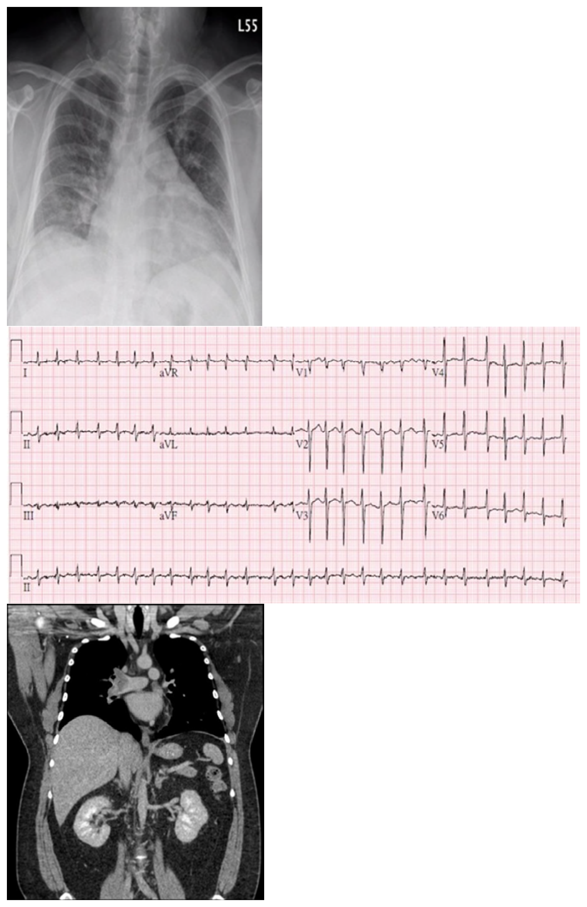
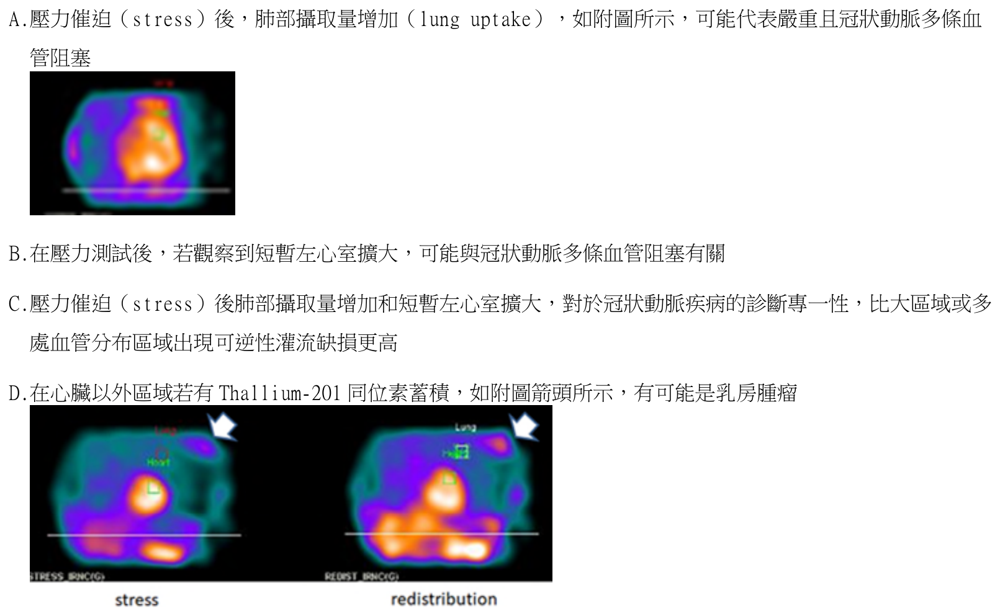
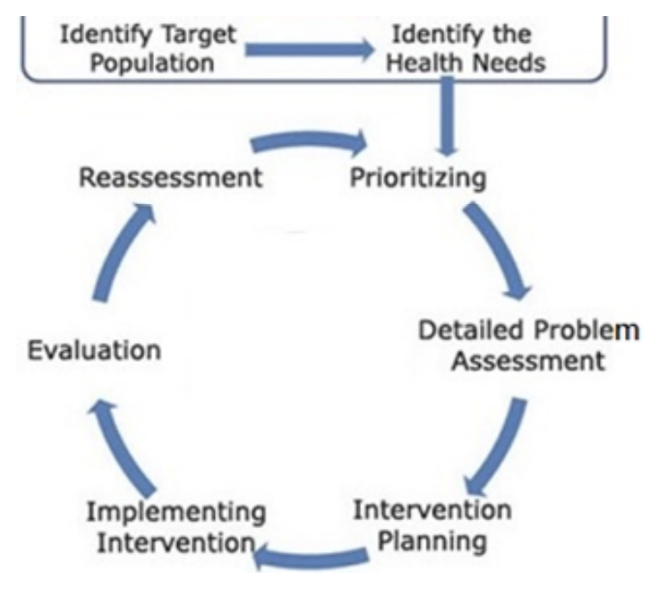
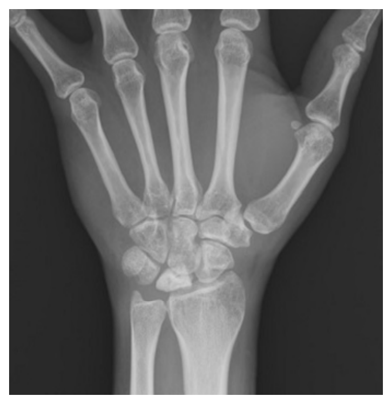

115 年醫師醫學（三）（包括內科、家庭醫學科等科目及其相關臨床實例與醫學倫理）試題與答案
這一頁是民國 115 年醫師醫學（三）（包括內科、家庭醫學科等科目及其相關臨床實例與醫學倫理）的整份歷屆試題，共 80 題，題目與標準答案出自考選部「國家考試試題及測驗式試題答案」開放資料，其中 80 題附有詳解。以下逐題列出題幹、選項與答案；要計時作答或記錄成績，請用線上練習。
考選部原始場次代碼：115020
線上作答這一科 →
全部 80 題
第 1 題
有關衰弱（frailty）的量表或測量工具，下列何者錯誤？
- （A）Linda Fried. Physical Frailty Index，≧1 分即為衰弱
- （B）Kenneth Rockwood Cumulative Deficit Frailty Index 要評估許多面向，分數的算法是（有缺損的面向總數／評估的面向總數）得到一個 0～1 的分數
- （C）Venerable Elder Survey 13 工具，≧3 分即為衰弱
- （D）Strawbridge 等人 1994 年設計的 Frailty Measure，problem/difficulties in≧2 domains 即為衰弱
本題送分，無標準答案
詳解與考點
本題官方公告送分。
第 2 題
下列何者是可以調節的（modifiable）骨鬆危險因子？
- （A）年老
- （B）抽菸
- （C）女性
- （D）一等親屬骨折史
答案：（B）
詳解與考點
正解：「可以調節」的骨質疏鬆危險因子。抽菸會影響骨代謝並增加骨折風險，且可經戒菸介入改變，因此屬可調節危險因子，故選 B。
A：年齡增加與骨量流失及跌倒風險有關，但無法藉由醫療或生活型態把年齡逆轉，屬不可調節因子。
C：女性因停經後雌激素下降等因素骨鬆風險較高，但生理性別本身不可改變，故非本題所稱可調節因子。
D：一等親屬骨折史反映遺傳與家族風險，無法改變；它看似可藉篩檢及早處理，但篩檢能改變的是後續風險管理，不是這項家族史本身。
本題考點：骨質疏鬆（osteoporosis）危險因子；可調節因子（modifiable risk factors）包括抽菸等生活型態暴露；年齡、性別與家族史屬不可調節因子（non-modifiable risk factors）。
第 3 題
王先生，68 歲，罹患晚期轉移性肺癌，近一週因無法口服進食而改由鼻胃管灌食，目前住進安寧病房。原先使用口服長效嗎啡控制慢性骨轉移疼痛已有良好效果。今日因疾病惡化無法再吞嚥藥物，但仍持續表示疼痛「像刀割一樣痛到睡不著」。如果身為安寧病房醫療團隊住院醫師，下一步最適當的疼痛處理策略為何？
- （A）停用嗎啡，改以 NSAIDs 貼片治療以減少副作用
- （B）改為嗎啡靜脈輸注或皮下持續給藥，並依先前口服劑量進行等效轉換
- （C）改開口服短效嗎啡並囑咐家屬協助灌食時服用
- （D）延後止痛藥物調整，先以抗焦慮藥物處理情緒與失眠
答案：（B）
詳解與考點
正解：原本口服長效嗎啡有效，但病人已無法吞嚥且仍有明顯癌痛。疼痛控制不應中斷，應改用可行的非口服途徑，例如嗎啡靜脈輸注或皮下持續給藥，並依既有口服總劑量進行等效轉換後，再依疼痛與副作用調整，故選 B。
A：NSAIDs 對部分骨轉移疼痛可作輔助治療，但不能取代原本已有效且病人仍需持續使用的強效鴉片類止痛藥；突然停用嗎啡會使嚴重疼痛失控。
C：適當劑型的即釋嗎啡可經鼻胃管給予；但僅隨灌食間歇投予短效嗎啡，無法取代原本的全天背景止痛。本例疼痛劇烈且病況惡化，改採靜脈或皮下持續給藥並做等效轉換，較能連續滴定與迅速控制疼痛。
D：焦慮與失眠可加重痛苦，但不能取代針對「像刀割般」持續疼痛的止痛處置。它看似同時處理情緒症狀，卻延誤了最迫切的癌痛控制。
本題考點：癌症疼痛（cancer pain）的鴉片類止痛藥（opioid analgesics）轉換；等效止痛轉換（equianalgesic conversion）後仍須個別滴定；皮下持續輸注（continuous subcutaneous infusion）適用於無法口服的安寧病人。
第 4 題
昏厥（syncope）的原因，最不可能包括下列何者？
- （A）迷走神經性昏厥（vasovagal syncope）
- （B）姿態性低血壓（orthostatic hypotension）
- （C）心因性昏厥（cardiac syncope）
- （D）手術性昏厥（operation related）
答案：（D）
詳解與考點
正解：昏厥的病因分類。昏厥是短暫腦灌流不足所致，可分為反射性昏厥、姿態性低血壓及心因性昏厥等；「手術性昏厥」不是標準病因分類，故最不可能的是 D。
A：迷走神經性昏厥（vasovagal syncope）是反射性昏厥的常見形式，可由疼痛、情緒或久站誘發，屬常見原因。
B：姿態性低血壓（orthostatic hypotension）在站立時血壓下降，造成短暫腦部低灌流，是昏厥的重要原因。
C：心因性昏厥（cardiac syncope）可由心律不整或結構性心臟病造成，因有較高危險性，臨床上尤其必須辨識。
本題考點：昏厥（syncope）是暫時性全腦低灌流造成的短暫意識喪失；反射性昏厥（reflex syncope）、姿態性低血壓（orthostatic hypotension）與心因性昏厥（cardiac syncope）為主要分類。
第 5 題
史帝芬－強生氏症候群（Stevens-Johnson syndrome, SJS）及中毒性表皮壞死鬆解症（toxic epidermalnecrolysis, TEN）是具致命危險的嚴重藥物過敏。在臺灣漢族血統者（Han Chinese），使用 allopurinol 而引起 SJS/TEN 嚴重皮膚不良反應與下列那一個 HLA 基因型的相關性最高？
- （A）HLA-B*15:02
- （B）HLA-B*31:01
- （C）HLA-B*57:01
- （D）HLA-B*58:01
答案：（D）
詳解與考點
正解：臺灣漢族使用 allopurinol 後發生嚴重皮膚不良反應的藥物基因體學關聯。HLA-B*58:01 與 allopurinol 引起的史帝芬－強生氏症候群／中毒性表皮壞死鬆解症風險高度相關，故選 D。
A：HLA-B*15:02 最典型的關聯是 carbamazepine 所致 SJS/TEN，並非 allopurinol 的主要相關基因型。
B：HLA-B*31:01 並非臺灣漢族 allopurinol 相關 SJS/TEN 的代表性高風險基因型。
C：HLA-B*57:01 與 abacavir 過敏反應的關聯最具代表性，不是本題 allopurinol 所問的基因型。
本題考點：藥物基因體學（pharmacogenomics）；HLA-B*58:01 與 allopurinol 嚴重皮膚不良反應（severe cutaneous adverse reactions）相關；SJS/TEN 是具高死亡風險的藥物過敏表現。
第 6 題
有關缺血性心臟病（ischemic heart disease, IHD）診斷方式之敘述，下列何者最不適當？
- （A）運動式心電圖是診斷 IHD 的工具之一，雖然有萬分之一的死亡風險，但只要有適當人員、設備在場，且限制心率上限，於無併發症之心肌梗塞一週後即可進行檢查
- （B）當病人因關節疾病、衰弱等原因無法進行運動測試時，可安排如：adenosine thallium 201 scan、dobutamine stress 等影像學檢查
- （C）當使用電腦斷層成像計算 Agatston score 以估測冠脈斑塊鈣化程度時，並不需要注射顯影劑
- （D）診斷性心導管冠脈造影雖具侵入性，但可早期確診 IHD 以進行相關治療，因此有助減少穩定性心絞痛病人之心絞痛症狀、心肌梗塞及死亡之風險
答案：（D）
詳解與考點
正解：穩定性心絞痛中診斷性冠狀動脈造影的角色。冠狀動脈造影可界定解剖性狹窄並在特定高風險情況協助治療決策，但不能因可早期確診，就宣稱可降低所有穩定性心絞痛病人的心肌梗塞與死亡風險；選項把診斷工具與改善硬終點混為一談，故最不適當的是 D。
A：運動心電圖是缺血性心臟病的非侵入性評估工具之一；在適當人員與設備監測下，選擇合適病人並設定運動終止條件可降低檢查風險，敘述方向正確。
B：不能運動的病人可用藥物誘發壓力測試，再配合心肌灌流或心臟超音波等影像評估缺血，敘述正確。
C：冠狀動脈鈣化分數（Agatston score）以非增強電腦斷層偵測鈣化，因此不需要注射顯影劑，敘述正確。
本題考點：缺血性心臟病（ischemic heart disease）檢查；壓力測試（stress testing）用於功能性缺血評估；冠狀動脈鈣化分數（Agatston score）不需顯影劑；冠狀動脈造影（coronary angiography）的診斷價值不等同於改善所有穩定病人的預後。
第 7 題
有關高血壓（hypertension）所造成的器官損傷，下列敘述何者錯誤？
- （A）高血壓可以導致左心室肥大、心衰竭和心律失常，包括心房顫動（atrial fibrillation）
- （B）高血壓是引發腦中風（stroke）的最強危險因子，大部分都是腦出血，其餘是腦梗塞
- （C）高血壓與老年人口的認知功能障礙及失智症有關
- （D）高血壓造成的腎臟損傷，與收縮壓的關係比舒張壓更密切
答案：（B）
詳解與考點
正解：高血壓相關腦中風的型態。高血壓確實是腦中風最重要的可調整危險因子之一，但在整體中風中，腦梗塞的比例通常高於腦出血；把「大部分」說成腦出血不正確，故錯誤的是 B。
A：長期高血壓增加左心室後負荷，可導致左心室肥大、心衰竭及心房顫動等心律不整，敘述正確，故非答案。
C：高血壓與血管性腦損傷、認知功能障礙及失智症風險增加有關，敘述正確，故非答案。
D：高血壓性腎損傷與收縮壓負荷密切相關，尤其高齡者收縮壓上升常反映血管僵硬與腎臟風險，敘述正確，故非答案。
本題考點：高血壓（hypertension）的標的器官損傷（target-organ damage）；腦中風（stroke）多數為缺血性腦梗塞而非腦出血；高血壓亦與心臟重塑、腎臟病與血管性認知障礙相關。
第 8 題
下列何項臨床狀況，發生肺栓塞（pulmonary embolism）且經過治療一段時間後，如果停用抗凝血藥物，其再發生靜脈血栓栓塞（venous thromboembolism）的風險最低？
- （A）活動性癌症（active cancer）
- （B）長途飛行（long-haul flight）
- （C）無可確認的靜脈血栓栓塞危險因子（no identifiable risk factor of venous thromboembolism）
- （D）外傷（trauma）
本題送分，無標準答案
詳解與考點
本題官方公告送分。
第 9 題
40 歲男性有 10 年心悸病史未妥善就醫，近一星期症狀加重，呼吸困難。到院時，BMI=41 kg/m2， BP 126/72mmHg，HR 141/min，RR 28/min，Temp 36.90 ℃，SpO2 97％，無貧血，甲狀腺觸診未有異常，未有第三心音及心雜音，肝脾不大，無腹水，雙下肢微腫。相關檢查如附圖。抽血報告如下：NT Pro-BNP 2470 pg/mL，Troponin T 0.019 ng/mL，D-dimer 20 mg/L FEU，ALT 196 U/L。下列何項診斷最符合目前狀況？

- （A）急性心肌炎
- （B）高血壓心臟病
- （C）肥厚性心肌病
- （D）肺動脈栓塞症
答案：（D）
詳解與考點
正解：本題最符合肺動脈栓塞症（pulmonary embolism）。病人近一星期加重的呼吸困難、呼吸急促與心搏過速，合併 D-dimer 明顯升高；附圖胸部電腦斷層冠狀切面可見肺動脈主幹分叉及雙側肺動脈內的充盈缺損，為肺動脈栓塞的直接影像證據。心電圖的心搏過速可反映急性右心負荷或原有心律不整，而 NT Pro-BNP 升高亦可見於肺栓塞造成的右心室壓力負荷，故選 D。
A：急性心肌炎可造成心衰竭、心律不整與 troponin 上升，但本例 Troponin T 僅輕度上升，且肺動脈內充盈缺損已直接指向血栓栓塞；急性心肌炎無法解釋此特異性電腦斷層表現。
B：高血壓心臟病通常需有長期高血壓病史，常伴左心室肥厚或舒張功能障礙；本例血壓正常，且影像顯示的是肺動脈血栓栓塞，並非高血壓造成的心臟結構性病變。
C：肥厚性心肌病常以不對稱性左心室肥厚、左心室流出道阻塞性雜音、昏厥或家族史為線索；本例未聞心雜音，且附圖電腦斷層的關鍵異常位於肺動脈血管腔內，不能以肥厚性心肌病解釋。
本題考點：肺動脈栓塞症（pulmonary embolism）的診斷結合臨床機率、D-dimer 與電腦斷層肺動脈血管攝影（CT pulmonary angiography）；血管腔內充盈缺損是肺栓塞的直接影像徵象；肺栓塞可造成右心室壓力負荷，使 NT Pro-BNP 與心肌傷害標記輕度上升。
第 10 題
根據 Vaughan Williams classification，可將抗心律不整藥分為以下幾大類，何者敘述錯誤？
- （A）Class Ⅰ藥物主要針對鈉離子通道（sodium channel），如 flecainide
- （B）Class Ⅱ藥物主要針對乙型交感神經受體（beta adrenergic receptor），如 bisoprolol
- （C）Class Ⅲ藥物主要針對鉀離子通道（potassium channel），如 amiodarone
- （D）Class Ⅳ藥物主要針對鈣離子通道（calcium channel），如 amlodipine
答案：（D）
詳解與考點
正解：Vaughan Williams 第Ⅳ類藥物的代表藥。第Ⅳ類是非二氫吡啶類鈣離子通道阻斷劑，作用於房室結；amlodipine 雖也是鈣離子通道阻斷劑，卻是二氫吡啶類、主要擴張血管，非第Ⅳ類抗心律不整藥，故 D 錯誤。
A：第Ⅰ類藥物阻斷鈉離子通道（sodium channel），flecainide 是其中代表藥物，敘述正確，故非答案。
B：第Ⅱ類藥物為乙型阻斷劑（beta-blockers），作用於乙型交感神經受體（beta adrenergic receptor）；bisoprolol 為代表之一，敘述正確，故非答案。
C：第Ⅲ類藥物以阻斷鉀離子通道（potassium channel）、延長再極化為主；amiodarone 雖具多重通道作用，分類上屬第Ⅲ類，敘述正確，故非答案。
本題考點：Vaughan Williams classification；Class Ⅰ 為鈉離子通道阻斷劑（sodium channel blockers），Class Ⅱ 為乙型阻斷劑（beta-blockers），Class Ⅲ 為鉀離子通道阻斷劑（potassium channel blockers），Class Ⅳ 為非二氫吡啶類鈣離子通道阻斷劑（non-dihydropyridine calcium channel blockers）。
第 11 題
58 歲男性，有慢性肺病和糖尿病病史，住院期間診斷為多重起源心房心搏過速（multifocal atrialtachycardia, MAT）。心電圖顯示 130 bpm 的心率，並有三種不同形態的 P 波。血液報告顯示正常的凝血功能，並未使用抗凝劑。關於 MAT 的血栓風險，下列敘述何者最適當？
- （A）MAT 的血栓風險類似於心房顫動（atrial fibrillation, AF）
- （B）MAT 的血栓風險目前缺乏大型臨床試驗證實
- （C）MAT 的血栓風險與心室顫動相同
- （D）MAT 患者需立即開始抗凝治療
答案：（B）
詳解與考點
正解：多重起源心房心搏過速（MAT）與心房顫動的區別。MAT 雖可出現不規則心律，但其電圖特徵是至少三種不同形態的 P 波，並不等同於心房顫動；目前缺乏大型臨床試驗證實 MAT 有如心房顫動般的血栓風險，因此不應只因診斷 MAT 就立即抗凝，故選 B。
A：MAT 和心房顫動都可呈現不規則節律，這是最強的誘答；但 MAT 保有可辨識的不同 P 波，沒有證據支持其血栓風險可直接比照心房顫動。
C：心室顫動是無有效心輸出的致命心律，與 MAT 的心房異位節律及血栓問題完全不同，不能相比。
D：抗凝治療應依確立的適應症與個別血栓、出血風險決定；單憑 MAT 診斷並無立即抗凝的標準適應症。
本題考點：多重起源心房心搏過速（multifocal atrial tachycardia, MAT）常見於慢性肺病；其心電圖有至少三種 P 波形態；MAT 與心房顫動（atrial fibrillation）的血栓風險與抗凝適應症不可直接類比。
第 12 題
下列血液檢查項目中，何者與高血壓致病機轉的探索最無相關？
- （A）肌酸酐
- （B）鉀離子
- （C）甲狀腺素
- （D）尿酸
答案：（D）
詳解與考點
正解：用血液檢查探索高血壓的致病機轉，應優先尋找腎臟、電解質與內分泌的次發性原因。肌酸酐可評估腎功能，鉀離子可提示醛固酮相關異常，甲狀腺素可評估甲狀腺功能；尿酸雖常與高血壓及代謝風險共存，對直接釐清病因最無相關，故選 D。
A：肌酸酐（creatinine）可評估腎功能，腎實質病變是次發性高血壓的重要原因，故與病因探索相關。
B：鉀離子（potassium）異常，特別是低血鉀，可提示原發性醛固酮增多症等造成高血壓的內分泌病因，故相關。
C：甲狀腺素（thyroxine）異常可造成血流動力學改變並與高血壓相關，因此評估甲狀腺功能有助於探索次發性病因。
本題考點：次發性高血壓（secondary hypertension）評估；肌酸酐（creatinine）檢視腎臟病因；鉀離子（potassium）與甲狀腺素（thyroxine）可協助辨識內分泌相關機轉；尿酸（uric acid）較偏向共病與風險指標。
第 13 題
心導管檢查可用於冠狀動脈心臟病之診斷，下列敘述何者最不適當？
- （A）於血管攝影時，冠狀動脈左前降支可能受心肌橋（myocardial bridge）壓迫，在心收縮期變細、舒張期恢復正常
- （B）當冠狀動脈嚴重狹窄時，狹窄遠端血流會減少，以致顯影劑僅能微量充盈遠端血管，此種情況可定義為TIMI 三級血流
- （C）血管內超音波（intravascular ultrasound, IVUS）及光學同調斷層攝影（optic coherence tomography,OCT）等檢查工具，可送入冠狀動脈內進行細部觀測，而 OCT 之空間解析度高於 IVUS，但可觀察之範圍深度較淺
- （D）血流儲備分數（fractional flow reserve, FFR）實際上是測量狹窄遠端及近端的壓力比值，在以藥物引發最大充血（maximal hyperemia）情況下，若 FFR＜0.8 表示病灶狹窄程度顯著，具有影響血行動力學之意義
答案：（B）
詳解與考點
正解：TIMI 血流分級。TIMI 3 代表正常、完整的遠端灌流；嚴重狹窄後顯影劑僅微量充盈遠端血管，是明顯減少甚至幾乎無灌流的情形，不可能定義為 TIMI 3，故最不適當的是 B。
A：心肌橋（myocardial bridge）常見於左前降支，收縮期受覆蓋心肌壓迫而變窄、舒張期恢復，是正確的血管攝影表現，故非答案。
C：OCT 的空間解析度高於 IVUS，但穿透深度較淺；兩者皆可置入冠狀動脈內進行細部評估，敘述正確，故非答案。
D：FFR 是最大充血時狹窄遠端與近端壓力的比值，FFR<0.8 表示病灶具有血行動力學顯著性，敘述正確，故非答案。
本題考點：TIMI flow grade 中 TIMI 3 為正常遠端灌流；血流儲備分數（fractional flow reserve, FFR）評估冠狀動脈狹窄的功能性意義；光學同調斷層攝影（optical coherence tomography, OCT）較血管內超音波（intravascular ultrasound, IVUS）具更高解析度但較淺穿透深度。
第 14 題
有關核醫心肌灌注掃描，下列敘述何者最不適當？

- （A）壓力催迫（stress）後，肺部攝取量增加（lung uptake），如附圖所示，可能代表嚴重且冠狀動脈多條血管阻塞
- （B）在壓力測試後，若觀察到短暫左心室擴大，可能與冠狀動脈多條血管阻塞有關
- （C）壓力催迫（stress）後肺部攝取量增加和短暫左心室擴大，對於冠狀動脈疾病的診斷專一性，比大區域或多處血管分布區域出現可逆性灌流缺損更高
- （D）在心臟以外區域若有 Thallium-201 同位素蓄積，如附圖箭頭所示，有可能是乳房腫瘤
答案：（C）
詳解與考點
正解：C 的比較不當。壓力後肺部攝取增加與短暫左心室擴大（transient ischemic dilation, TID）都是嚴重、廣泛缺血或多條冠狀動脈病變的高風險線索，但並非比依冠狀動脈供血區分布的可逆性灌流缺損具有更高的冠狀動脈疾病診斷專一性。附圖壓力期與再分布期影像可見心臟以外胸部區域的放射性訊號，應配合灌流缺損型態及臨床資料判讀，故選 C。
A：壓力期肺部攝取增加（lung uptake）可反映壓力誘發左心室功能不全、左心室充盈壓升高或廣泛缺血；在嚴重冠狀動脈疾病，尤其多條血管病變時可出現，因此是合理的高風險徵象。
B：壓力後短暫左心室擴大是 TID 現象，可見於廣泛心肌缺血或多條冠狀動脈阻塞；它提示高風險病變，但須與影像品質及其他灌流表現一併判讀。
D：附圖箭頭所指為心臟外胸部的局部 Thallium-201 蓄積。Tl-201 可在部分腫瘤組織蓄積，若位於乳房投影區，乳房腫瘤是可能的鑑別診斷之一，故此敘述並非最不適當。
本題考點：心肌灌注掃描（myocardial perfusion imaging）以壓力期與再分布期比較判讀可逆性缺血；肺部攝取增加（lung uptake）與短暫左心室擴大（transient ischemic dilation, TID）為嚴重或廣泛冠狀動脈疾病的高風險徵象；心臟外 Thallium-201 蓄積（extracardiac uptake）須考慮非心臟病灶。
第 15 題
下列何種 nucleos(t)ide analogue 不建議在懷孕的慢性 B 型肝炎婦女使用？
- （A）entecavir
- （B）telbivudine
- （C）tenofovir（TDF）
- （D）tenofovir（TAF）
答案：（A）
詳解與考點
正解：懷孕期間慢性 B 型肝炎的核苷（酸）類似物選擇。entecavir 的孕期安全性資料相對有限，通常不建議在懷孕者持續使用；若已懷孕而需抗病毒治療，常需評估改用具較多孕期使用經驗的替代藥物，故選 A。
B：telbivudine 有孕期使用經驗，在特定情境可作為選項之一，並非本題所問的不建議藥物。
C：tenofovir（TDF）有較多孕期安全性與母嬰垂直感染預防的使用資料，通常是懷孕時較可考慮的藥物，故非答案。
D：tenofovir（TAF）的孕期資料較 TDF 少，臨床選擇須考量個別情境；但本題在所列選項中所指的明確不建議藥物為 entecavir，而非 TAF。
本題考點：慢性 B 型肝炎（chronic hepatitis B）孕期抗病毒治療；核苷（酸）類似物（nucleos(t)ide analogues）的選擇須兼顧母體病情與胎兒安全；entecavir 在懷孕期間通常不建議使用。
第 16 題
關於消化性潰瘍治療用藥，下列何者錯誤？
- （A）可使用 sucralfate 一天服用 4 次，每次 1 g
- （B）乙型組織胺受器（H2 receptor）拮抗劑 cimetidine，因其成分受到 N-nitrosodimethylamine 污染，具致癌性已被下架停用
- （C）使用氫離子幫浦阻斷劑（proton pump inhibitor）會造成血中胃泌素（gastrin）上升
- （D）使用氫離子幫浦阻斷劑（proton pump inhibitor）數個月，發生腹瀉，要懷疑有無困難梭菌（Clostridiumdifficile）感染
答案：（B）
詳解與考點
正解：消化性潰瘍藥物中哪一項敘述錯誤。cimetidine 是 H2 receptor antagonist，但曾因 N-nitrosodimethylamine 雜質疑慮而受影響、下架的是 ranitidine，不能因此推論 cimetidine 已停用，故錯誤的是 B。
A：sucralfate 可在胃酸環境形成保護性屏障，常用給法為每次 1 g、每日 4 次；它的作用是保護潰瘍面，並非抑制胃酸分泌。
C：proton pump inhibitor 強力抑制胃酸後，胃內負回饋減弱，會使胃泌素（gastrin）上升，敘述正確。
D：長期使用 proton pump inhibitor 後發生腹瀉時，確應考慮 Clostridioides difficile infection；看似只是常見藥物副作用，但胃酸抑制與腸道菌相改變會增加此感染的可能性。
本題考點：消化性潰瘍藥物（peptic ulcer pharmacotherapy）——sucralfate 為黏膜保護劑；H2 receptor antagonist 與 proton pump inhibitor 的作用及不良反應；Clostridioides difficile infection 的危險因子。
第 17 題
關於肝細胞癌 hepatocellular carcinoma（HCC）預防的措施，下列何者正確？
- （A）世界衛生組織建議僅對高危險成人施打 HBV 疫苗
- （B）抗病毒治療使慢性 HBV 感染者血中 HBV DNA 持續陰性，可降低 HCC 發生風險
- （C）HCV 感染患者達到持續病毒學反應 sustained virological response（SVR），肝硬化患者 HCC 風險可完全消除
- （D）兒童及新生兒無需接種 HBV 疫苗，因其 HCC 風險極低
答案：（B）
詳解與考點
正解：慢性 HBV 感染者若以抗病毒治療持續抑制 HBV DNA，可減少肝臟發炎、纖維化與肝硬化進展，因此能降低而非完全歸零 HCC 的發生風險，故選 B。
A：HBV 疫苗的公共衛生策略是普及接種，並非只提供高危險成人；新生兒接種尤其是阻斷母嬰傳播與日後慢性帶原的重要措施。
C：HCV 感染者達到 sustained virological response 後，HCC 風險會下降；但已有肝硬化者仍保有殘餘風險，不能說完全消除。
D：兒童及新生兒感染 HBV 後較容易成為慢性感染，日後可進展為肝硬化或 HCC，因此正是疫苗預防的重要對象。
本題考點：肝細胞癌預防（hepatocellular carcinoma prevention）——HBV vaccination 預防慢性 HBV；病毒抑制（viral suppression）可降低 HBV 相關 HCC；HCV 達 SVR 後肝硬化者仍須評估 HCC 監測。
第 18 題
關於肝腎症候群（hepatorenal syndrome, HRS）的敘述，下列何者正確？
- （A）HRS 是一種結構性腎臟損傷，腎臟切片可明顯發現病理改變
- （B）HRS 的主要病理機轉為腎血管擴張導致腎血流增加
- （C）HRS 治療首選為利尿劑及血管擴張劑合併使用
- （D）肝移植是 HRS 最有效的治療，且可恢復腎功能
答案：（D）
詳解與考點
正解：HRS 是嚴重肝硬化或急性肝衰竭背景下的功能性腎衰竭；最根本且最有效的治療是肝移植，肝功能改善後腎血流動力異常可逆轉，腎功能也可能恢復，故選 D。
A：HRS 的腎臟本身通常沒有可解釋腎衰竭的顯著結構性病變，與 acute tubular injury 等腎實質損傷不同。
B：肝硬化的內臟血管擴張會造成有效動脈血容量下降，後續引發腎血管收縮與腎灌流下降；主要腎臟變化不是腎血管擴張及腎血流增加。
C：HRS 治療須處理誘發因素、停用可能加重腎灌流的藥物，並以白蛋白及血管收縮策略改善有效循環；利尿劑與血管擴張劑會使有效動脈血容量更差，並非首選。
本題考點：肝腎症候群（hepatorenal syndrome, HRS）——屬功能性腎衰竭，核心為腎血管收縮與腎灌流不足；肝移植（liver transplantation）為根本治療。
第 19 題
關於養分吸收不良（nutrient malabsorption）與臨床徵狀之配對，下列何者錯誤？
- （A）鐵（iron）—貧血（anemia）
- （B）維他命 K（vitamin K）—瘀斑（ecchymosis）
- （C）必需脂肪酸（essential fatty acids）—皮膚炎（dermatitis）
- （D）維他命 B12（vitamin B12）—抽搐（tetany）
答案：（D）
詳解與考點
正解：營養素吸收不良的典型缺乏表現。vitamin B12 缺乏主要造成巨球性貧血與神經學異常；tetany 最典型是低血鈣，故 vitamin B12—tetany 的配對錯誤，選 D。
A：iron 吸收不良會使血紅素合成受限，造成缺鐵性貧血，配對正確。
B：vitamin K 缺乏使凝血因子活化受阻，容易出現瘀斑或其他出血傾向，配對正確。
C：essential fatty acids 缺乏可出現皮膚炎；看似也可能把皮膚症狀歸於其他維生素缺乏，但必需脂肪酸確與皮膚屏障及發炎調節有關。
本題考點：吸收不良症候群（malabsorption syndrome）——iron 缺乏與貧血；vitamin K 缺乏與出血傾向；essential fatty acid 缺乏與皮膚炎；tetany 應優先聯想到 hypocalcemia。
第 20 題
下列何者並非急性胰臟炎之可能原因？
- （A）高三酸甘油酯血症（hypertriglyeridemia）
- （B）低血鈣症（hypocalcemia）
- （C）胰腺癌（pancreatic adenocarcinoma）
- （D）膽結石（cholelithiasis）
答案：（B）
詳解與考點
正解：急性胰臟炎常見致病機轉包括膽道阻塞、酒精、代謝異常與腫瘤造成的胰管阻塞。低血鈣通常是嚴重急性胰臟炎的結果或嚴重度線索；反而高血鈣才是可誘發急性胰臟炎的代謝因素，故選 B。
A：hypertriglyceridemia 可因游離脂肪酸毒性等機轉誘發急性胰臟炎，是已知病因。
C：pancreatic adenocarcinoma 可能阻塞胰管而造成阻塞性胰臟炎，雖較不常見，仍是可能原因。
D：cholelithiasis 的結石移動至壺腹附近可阻塞胰液排出，是急性胰臟炎的重要病因。
本題考點：急性胰臟炎（acute pancreatitis）病因——膽結石、hypertriglyceridemia、高血鈣與胰管阻塞；hypocalcemia 多為疾病後的生化異常而非原因。
第 21 題
關於發炎性腸道疾病（inflammatory bowel disease）臨床表現的敘述，下列何者錯誤？
- （A）闌尾切除（appendectomy）對於潰瘍性大腸炎（ulcerative colitis）的發生有保護作用
- （B）三分之一的克隆氏症患者有肛周疾病，表現為直腸周瘻管、肛裂、膿腫和肛門狹窄
- （C）中毒性巨結腸（toxic megacolon）通常發生於嚴重潰瘍性大腸炎病患，其定義為左側結腸直徑大於 6 公分且失去結腸袋（haustration）構造
- （D）約 10～30％的克隆氏症患者會在病程中的某段時間發生腹腔或骨盆腔膿腫。穿孔造成的腹膜炎，尤其是結腸性腹膜炎，可能會致命
答案：（C）
詳解與考點
正解：題目問錯誤敘述。toxic megacolon 是嚴重結腸炎合併全身毒性與結腸擴張的臨床診斷，影像上的結腸擴張是重點，但不能只以「左側結腸直徑」及失去 haustration 構造作為完整定義；該敘述過度侷限且缺少全身毒性條件，故選 C。
A：appendectomy 與 ulcerative colitis 發生風險較低有關，為流行病學上已知的保護性關聯，敘述正確。
B：Crohn disease 可出現肛周瘻管、肛裂、膿腫與肛門狹窄；這些穿透性或狹窄性病灶是其相較 ulcerative colitis 的重要臨床特徵。
D：Crohn disease 的腸壁全層發炎可穿孔並形成腹腔或骨盆腔膿腫；若進展為腹膜炎，特別是糞便性結腸穿孔相關腹膜炎，確可能危及生命。
本題考點：發炎性腸道疾病（inflammatory bowel disease）——Crohn disease 的全層發炎及肛周疾病；ulcerative colitis 的結腸炎併發症；toxic megacolon 須以結腸擴張合併全身毒性整體判讀。
第 22 題
下列何者不是膽囊／膽管結石所引發的併發症？
- （A）急性膽囊炎（acute cholecystitis）
- （B）膽管囊腫（choledochal cyst）
- （C）急性胰臟炎（acute pancreatitis）
- （D）急性膽管炎（acute cholangitis）
答案：（B）
詳解與考點
正解：膽囊或膽管結石造成阻塞與膽汁鬱積，可引發急性膽囊炎、急性膽管炎及膽石性急性胰臟炎；choledochal cyst 則是膽管先天性或結構性擴張病變，不是結石引發的併發症，故選 B。
A：膽囊頸或膽囊管結石阻塞會造成膽囊發炎，是 acute cholecystitis 的常見機轉。
C：結石卡在壺腹附近可阻礙胰液引流，誘發 acute pancreatitis。
D：膽總管結石造成膽道阻塞後若併發細菌感染，可形成 acute cholangitis。
本題考點：膽石症併發症（complications of gallstone disease）——膽囊管阻塞可致 acute cholecystitis；總膽管阻塞可致 acute cholangitis 或 gallstone pancreatitis；choledochal cyst 為結構異常。
第 23 題
下列關於急性腸繫膜缺血（acute mesenteric ischemia）之敘述，何者最不適當？
- （A）可能因動脈血栓所引起
- （B）病程初期腹部身體診察多半沒有明顯之反彈痛
- （C）以內科治療為優先，儘可能避免開腹探查及手術治療
- （D）電腦斷層血管攝影（CT angiography）對於診斷上腸繫膜動脈阻塞具有高敏感度
答案：（C）
詳解與考點
正解：急性腸繫膜缺血可能迅速進展為腸壞死與腹膜炎。是否採血管內治療或開腹手術須依缺血原因、腸管存活性與腹膜炎而定；若疑有壞死或腹膜炎，及時手術探查不可延誤，因此「儘可能避免」手術並一律以內科治療優先最不適當，故選 C。
A：動脈粥樣硬化處的血栓形成可阻塞腸繫膜動脈，是 acute mesenteric ischemia 的病因之一。
B：病程早期常見疼痛程度與腹部理學檢查不相稱，未必已有反彈痛；反彈痛出現時反而要警覺腸壞死或腹膜炎。
D：CT angiography 可快速評估上腸繫膜動脈阻塞與腸道缺血徵象，是重要的診斷工具。
本題考點：急性腸繫膜缺血（acute mesenteric ischemia）——早期疼痛與腹部檢查不相稱；CT angiography 的診斷角色；腸壞死或腹膜炎時需緊急外科評估。
第 24 題
下列何者是慢性腎臟疾病最不常見之障礙？
- （A）高血鈉
- （B）高血磷
- （C）次發性副甲狀腺機能亢進
- （D）貧血
答案：（A）
詳解與考點
正解：慢性腎臟疾病因排水與排鈉能力下降，臨床上較常出現水分滯留相關的低血鈉，而非高血鈉；高血鈉不是其典型、也最不常見的障礙，故選 A。
B：腎功能下降使磷排泄減少，容易發生 hyperphosphatemia，是慢性腎臟疾病常見的礦物質代謝異常。
C：高血磷、活性 vitamin D 減少及低血鈣刺激副甲狀腺，會造成 secondary hyperparathyroidism。
D：腎臟 erythropoietin 生成不足是 renal anemia 的主要機轉，因此貧血常見。
本題考點：慢性腎臟疾病併發症（chronic kidney disease complications）——高血磷、secondary hyperparathyroidism 與 renal anemia 常見；鈉濃度須受體液狀態影響，hypernatremia 非典型。
第 25 題
下列何種感染，最容易發生在腎臟移植手術後的 1 個月內？
- （A）口腔念珠菌感染
- （B）巨細胞病毒感染
- （C）肺囊蟲肺炎
- （D）人類多瘤性病毒（BK 病毒）感染
答案：（A）
詳解與考點
正解：腎臟移植後最初 1 個月的感染多與手術、住院、導管及高強度免疫抑制有關，常見院內或傷口相關病原；口腔念珠菌感染可在此早期免疫抑制期間出現，故選 A。
B：cytomegalovirus infection 多在移植後較晚的時期出現，尤其是預防藥物停止後或免疫抑制較深時。
C：Pneumocystis jirovecii pneumonia 通常屬移植後數月的機會性感染；在適當預防下，最初 1 個月不是最典型時點。
D：BK virus reactivation 與持續免疫抑制相關，常在移植後較晚期造成病毒血症或 BK virus nephropathy。
本題考點：腎臟移植後感染時序（post-transplant infection timeline）——最初 1 個月以手術與住院相關感染為主；中後期才較常見 CMV、Pneumocystis jirovecii 與 BK virus 等機會性感染。
第 26 題
關於感染後腎絲球腎炎（post-infectious glomerulonephritis）的臨床表現，下列敘述何者最適當？
- （A）常出現肉眼可視血尿，唯少見血塊
- （B）典型發生於葡萄球菌型咽喉炎或皮膚感染後 10 天至 3 週
- （C）治療首重抗生素，以期逆轉或縮短急性腎炎病程
- （D）通常伴隨 C3 補體下降，可用於區分 IgA 腎病變急性發作
答案：（D）
詳解與考點
正解：官方答案為 D。post-infectious glomerulonephritis 常由免疫複合體活化補體，典型可見 C3 下降；IgA nephropathy 的肉眼血尿多與上呼吸道感染同步或很接近，且補體通常正常，因此 C3 有助兩者鑑別，故選 D。
A：感染後腎絲球腎炎可出現肉眼血尿，且腎絲球性血尿通常不形成血塊，故本敘述具有合理性。相較之下，（D）的 C3 下降是更具鑑別力的典型線索，可與補體通常正常的 IgA nephropathy 急性發作區分；本題仍有單選辨識度不足的爭點。
B：典型的感染後腎絲球腎炎常與鏈球菌咽喉或皮膚感染有關，不是「葡萄球菌型咽喉炎」；此選項把病原與感染部位錯置。
C：若仍有活動性感染，抗生素用於清除感染與防止傳播，但急性腎炎主要是免疫反應，抗生素不能逆轉或顯著縮短已發生的腎炎病程。
本題考點：感染後腎絲球腎炎（post-infectious glomerulonephritis）——免疫複合體與補體消耗；C3 下降；與 IgA nephropathy 的感染時間關係及補體表現鑑別。
第 27 題
診斷間質性膀胱炎（interstitial cystitis/bladder pain syndrome, IC/BPS）通常要求症狀持續至少多久時間？
- （A）1 週
- （B）6 週
- （C）3 個月
- （D）6 個月
答案：（B）
詳解與考點
正解：IC/BPS 的診斷概念是與膀胱相關的不適感合併下泌尿道症狀，且排除感染或其他可辨識原因；症狀須持續至少 6 週，故選 B。
A：1 週症狀過短，較應先評估急性泌尿道感染、結石或其他急性病因。
C：3 個月可涵蓋許多慢性疼痛定義，但不是 IC/BPS 常用診斷門檻；看似較嚴格，卻會不必要延後符合條件者的評估。
D：6 個月同樣不是 IC/BPS 的通常最低症狀時間要求。
本題考點：間質性膀胱炎／膀胱疼痛症候群（interstitial cystitis/bladder pain syndrome, IC/BPS）——膀胱相關疼痛與下泌尿道症狀；至少 6 週；須排除感染及其他病因。
第 28 題
下列關於各種類型結石形成之敘述，何者錯誤？
- （A）草酸鈣結石（calcium oxalate stones）的危險因子，包括較高的尿鈣濃度、較高的尿草酸濃度以及較低的尿檸檬酸濃度。在生理範圍內，這種結石類型對尿液酸鹼值（pH）並不敏感
- （B）磷酸鈣結石（calcium phosphate stones）的危險因子，包括較高的尿鈣濃度及較低的尿檸檬酸濃度
- （C）尿酸結石（uric acid stone）的危險因子為持續偏低的尿液酸鹼值（低 pH）以及較高的尿酸排泄量
- （D）胱胺酸結石（cystine stones）的危險因子，包括較高的尿鈣濃度以及較低的尿檸檬酸濃度
答案：（D）
詳解與考點
正解：cystine stones 的根本問題是 cystinuria 造成尿中胱胺酸濃度過高，尿液偏酸時溶解度更差；高尿鈣與低尿檸檬酸是鈣結石常見危險因子，不能當作胱胺酸結石的主要危險因子，故選 D。
A：calcium oxalate stones 的形成與高尿鈣、高尿草酸、低尿檸檬酸有關；在一般生理 pH 範圍內，pH 的影響相較其他結石類型較小，敘述正確。
B：calcium phosphate stones 與高尿鈣、低尿檸檬酸有關，尿液偏鹼也有利其形成；選項雖未列盡危險因子，所述內容正確。
C：uric acid 在低 pH 尿液中溶解度下降，高尿酸排泄也會增加結石風險，敘述正確。
本題考點：尿路結石（urolithiasis）——calcium oxalate、calcium phosphate、uric acid 與 cystine stones 的尿液危險因子；cystinuria 與尿液酸化是 cystine stones 的關鍵。
第 29 題
有關慢性腎臟病所併發之腎性貧血（renal anemia），下列何者錯誤？
- （A）腎性貧血之紅血球型態常為正常血球大小（normocytic）與正常色素性（normochromic）
- （B）腎性貧血常出現虛弱、運動耐受力不良（exercise intolerance）、心衰竭與認知功能異常等症狀
- （C）造成腎性貧血最主要的原因為紅血球生成素（erythropoietin）不足
- （D）為改善腎性貧血病患之死亡率，應將病患之血色素值矯正至正常人標準值（≧13 g/dL）
答案：（D）
詳解與考點
正解：腎性貧血治療的目標是改善症狀並避免輸血等風險，不應將血色素強行矯正到一般人的正常高值；過度使用 erythropoiesis-stimulating agent 提高血色素反而可能增加不良心血管與血栓事件，因此 D 錯誤。
A：erythropoietin 缺乏造成的腎性貧血典型為 normocytic、normochromic；但仍應評估是否同時合併 iron deficiency。
B：貧血造成組織氧氣運送下降，可出現虛弱、運動耐受差與認知功能異常，並可能加重心衰竭。
C：慢性腎臟疾病使腎臟 erythropoietin 生成不足，是 renal anemia 最主要的致病機轉。
本題考點：腎性貧血（renal anemia）——erythropoietin deficiency 導致 normocytic normochromic anemia；erythropoiesis-stimulating agent 應避免把血色素過度矯正至正常高值。
第 30 題
有關慢性腎臟病的治療，下列何者最適當？
- （A）慢性腎臟病患者合併高血壓，其降血壓藥物首選為乙型腎上腺交感神經阻斷劑（beta blocker）
- （B）糖尿病慢性腎臟病患者使用第 2 型鈉–葡萄糖共同轉運蛋白抑制劑（SGLT2 inhibitor）可有效降低腎功能衰退
- （C）患有重度蛋白尿之糖尿病慢性腎臟病患者，最好合併使用血管張力素轉化酶抑制劑（ACEi）和血管張力素Ⅱ型受體拮抗劑（ARB）來治療
- （D）患有腎病症候群之慢性腎臟病患者，應採用高蛋白飲食療法以矯正低蛋白血症
答案：（B）
詳解與考點
正解：糖尿病合併慢性腎臟疾病者使用 SGLT2 inhibitor，除降低血糖外，亦能藉由調整腎絲球內壓等腎臟保護效應，減緩腎功能惡化，故選 B。
A：慢性腎臟疾病合併高血壓的首選需考量 albuminuria；對蛋白尿患者，RAAS blockade 通常較具腎臟保護性，beta blocker 並非一概首選。
C：ACEi 與 ARB 均可降低蛋白尿，但合併使用會增加高血鉀、低血壓與急性腎損傷風險，不宜作為常規治療。
D：腎病症候群的低白蛋白血症主要來自尿蛋白流失，高蛋白飲食未必能矯正，且可能加重蛋白尿與腎臟負荷，並非建議作法。
本題考點：慢性腎臟疾病治療（chronic kidney disease management）——SGLT2 inhibitor 的腎臟保護；RAAS blockade 用於 albuminuria；避免 ACEi 加 ARB 的雙重阻斷。
第 31 題
下列何者的臨床表現對診斷抗磷脂症候群（anti-phospholipid syndrome）最沒有幫助？
- （A）血小板低下
- （B）反覆胃腸出血
- （C）反覆流產
- （D）血液檢查有 anti-β2 glycoprotein I（anti-β2GPI）抗體
答案：（B）
詳解與考點
正解：anti-phospholipid syndrome 的核心臨床表現是血栓與妊娠併發症，並結合持續的 antiphospholipid antibodies。反覆胃腸出血是出血性症狀，無法支持其典型的血栓性病理，對診斷最沒有幫助，故選 B。
A：thrombocytopenia 可見於 anti-phospholipid syndrome，雖不是診斷核心的血栓事件，仍是可伴隨的血液學表現。
C：反覆流產或其他符合條件的妊娠併發症，是 anti-phospholipid syndrome 的重要臨床線索。
D：anti-β2GPI antibody 是 antiphospholipid antibody 的一種，與臨床條件合併評估時可支持診斷。
本題考點：抗磷脂症候群（anti-phospholipid syndrome）——動靜脈血栓與妊娠併發症；anti-β2 glycoprotein I antibody；thrombocytopenia 可伴隨但出血非典型核心表現。
第 32 題
關於 Sjögren's syndrome 的敘述，下列何者最不適當？
- （A）Sjögren's syndrome 最常侵犯唾液腺和淚腺，因此常有蛀牙的情形
- （B）Sjögren's syndrome 常有腎絲球的病變，較少有關節疼痛／關節炎症狀
- （C）Anti-SSA（Ro）抗體和 Sjögren's syndrome 有關
- （D）Sjögren's syndrome 有較高的 lymphoma 發生機率
答案：（B）
詳解與考點
正解：Sjögren's syndrome 最主要侵犯外分泌腺，造成乾眼與口乾，也常有關節痛或關節炎等全身表現；腎臟受累較常見的是 tubulointerstitial nephritis 而非腎絲球病變，因此 B 顛倒了典型受累部位與關節表現，最不適當。
A：唾液腺功能下降會使口腔乾燥、清潔作用減弱，增加蛀牙風險，敘述正確。
C：anti-SSA（Ro）antibody 與 Sjögren's syndrome 有關，是重要的自體抗體線索。
D：Sjögren's syndrome 患者發生 B-cell lymphoma 的風險較一般人高，需留意持續腺體腫大等警訊。
本題考點：乾燥症（Sjögren's syndrome）——exocrinopathy 造成 sicca symptoms 與蛀牙；anti-SSA（Ro）antibody；腎臟常見 tubulointerstitial nephritis；淋巴瘤（lymphoma）風險上升。
第 33 題
關於 calcium pyrophosphate deposition（CPPD）和 calcium apatite deposition（CAD）結晶引起的關節炎之敘述，下列何者最適當？
- （A）CPPD 的關節炎好發在年輕族群
- （B）年輕族群有 CPPD 疾病常合併其它代謝的疾病
- （C）在偏光顯微鏡下可由看到 CAD 的結晶而與 CPPD 結晶來區別
- （D）只要有 CAD 的結晶在關節內就會引起急性關節炎
答案：（B）
詳解與考點
正解：CPPD 出現在年輕族群並不典型，若年輕人出現 CPPD，應主動尋找代謝性疾病或遺傳性原因，故選 B。
A：CPPD 關節炎較常見於高齡者；年輕族群發病正是需要進一步尋找次發性原因的線索。
C：CPPD 結晶可在偏光顯微鏡下辨認其弱正雙折射特性；CAD 結晶通常太小、非雙折射，不能單靠「看到 CAD 結晶」作此鑑別。
D：關節內有 CAD 結晶可為無症狀沉積，並非只要存在就必然引起 acute arthritis；看似符合結晶致炎概念，但是否發作還受局部發炎反應影響。
本題考點：焦磷酸鈣沉積疾病（calcium pyrophosphate deposition disease, CPPD）——高齡者較常見，年輕發病須找代謝或遺傳因素；basic calcium phosphate 或 calcium apatite deposition 的結晶檢測限制；無症狀結晶沉積。
第 34 題
關於類風濕性關節炎，下列敘述何者最適當？
- （A）較常發生在下肢大關節
- （B）患者的晨間僵硬感通常小於 30 分鐘
- （C）較常出現左右對稱的多關節炎，但疾病初期也可以從單關節炎開始
- （D）遠端指間關節（distal interphalangeal joint）如果也影響到，代表疾病嚴重度較高
答案：（C）
詳解與考點
正解：rheumatoid arthritis 的典型型態是左右對稱、多關節的發炎性關節炎，常侵犯手部與足部小關節；不過疾病初期也可能先以單一關節發炎表現，故選 C。
A：rheumatoid arthritis 較典型侵犯小關節，尤其手部與足部，而非以下肢大關節為主要好發部位。
B：發炎性關節炎的晨間僵硬通常持續較久，小於 30 分鐘較偏向 osteoarthritis 等非發炎性問題。
D：遠端指間關節不是 rheumatoid arthritis 的典型侵犯部位；若明顯受累，應考慮 osteoarthritis 或 psoriatic arthritis 等其他診斷，不能視為嚴重度指標。
本題考點：類風濕性關節炎（rheumatoid arthritis）——對稱性多關節炎與小關節侵犯；發炎性晨間僵硬；distal interphalangeal joint 受累應思考其他關節病。
第 35 題
下列疾病與其已知的自體抗原（auto-antigen）之配對，何者最不適當？
- （A）myasthenia gravis—acetylcholine receptor
- （B）autoimmune thyroiditis—thyroglobulin
- （C）progressive systemic sclerosis—tubulin
- （D）granulomatosis with polyangiitis—proteinase 3
答案：（C）
詳解與考點
正解：progressive systemic sclerosis 的代表性自體抗體包括 anti-centromere、anti-topoisomerase I 與 anti-RNA polymerase III 等，tubulin 並非其已知的典型自體抗原配對，故最不適當的是 C。
A：myasthenia gravis 常與 acetylcholine receptor antibody 有關；部分患者則可見其他神經肌肉接點相關抗體，但此配對本身正確。
B：autoimmune thyroiditis 可產生針對 thyroglobulin 的自體抗體，配對正確。
D：granulomatosis with polyangiitis 常與 PR3-ANCA 有關，proteinase 3 是其重要抗原，配對正確。
本題考點：自體免疫疾病抗原（autoantigens in autoimmune disease）——acetylcholine receptor 與 myasthenia gravis；thyroglobulin 與 autoimmune thyroiditis；proteinase 3 與 granulomatosis with polyangiitis；systemic sclerosis 的特徵性自體抗體。
第 36 題
下列關於 ECOG 體能狀態和 Karnofsky performance status 的敘述，何者錯誤？
- （A）ECOG 系統以 0～5 為評分標準，數字越小表示功能越好
- （B）ECOG 0 約等同於 Karnofsky 100 分
- （C）Karnofsky＜50 分通常與 ECOG≦2 接近
- （D）ECOG 和 Karnofsky 分數可用作癌症預後及治療耐受性的指標
答案：（C）
詳解與考點
正解：比較 ECOG 與 Karnofsky performance status（KPS）的功能對照。ECOG 分數越高代表功能越差；KPS 則分數越低代表功能越差。Karnofsky<50 分表示需相當程度協助，約較接近 ECOG 3 以上，而不是 ECOG≦2，故錯誤敘述為 C。
A：ECOG 體能狀態（ECOG performance status）分為 0～5 級，0 代表完全活動正常，5 代表死亡，分數越小功能越好，敘述正確，故非答案。
B：ECOG 0 表示活動能力完全正常，與 KPS 100 分所代表的正常活動狀態相近，敘述正確。
D：ECOG 與 KPS 都量化病人的日常功能，能協助評估癌症預後、治療耐受性及是否適合特定治療，敘述正確。
本題考點：體能狀態（performance status）——ECOG 分數上升代表失能加重，Karnofsky performance status 分數下降代表失能加重；兩套量表可用於腫瘤預後與治療決策。
第 37 題
一名骨肉瘤的年輕病人，手術後進行高劑量 methotrexate 的輔助性化療，3 天後出現黏膜炎、輕度骨髓抑制及血中 methotrexate 濃度偏高（＞10⁻7M）且腎功能惡化，尿液偏酸性。除持續監測血中 methotrexate 濃度外，下列處置何者最適合？
- （A）立即停用 leucovorin（N5-formyltetrahydrofolate），減少進一步干擾治療效果
- （B）改為投與 folic acid 取代 leucovorin
- （C）增加 leucovorin 劑量至 50～100 mg/m2
- （D）使用 L-glutamine 以改善腎功能
答案：（C）
詳解與考點
正解：高劑量 methotrexate 後血中濃度偏高、腎功能惡化且尿液偏酸，表示藥物清除受阻並有毒性；關鍵是加強 folinic acid rescue。leucovorin（N5-formyltetrahydrofolate）可繞過 methotrexate 對葉酸代謝的阻斷，血中濃度高或清除延遲時須提高救援劑量，故選 C。題中所列 50～100 mg/m2 的實際劑量仍須依血中濃度、腎功能與治療流程調整。
A：停用（A）leucovorin 會撤除對正常細胞的葉酸救援，使黏膜炎與骨髓抑制惡化；它看似可避免干擾抗腫瘤效果，卻忽略目前已有延遲清除與毒性。
B：folic acid 不能取代（B）leucovorin 作為高劑量 methotrexate 的標準救援，因其仍須經還原代謝步驟，無法有效繞過被抑制的途徑。
D：L-glutamine 並非處理（D）methotrexate 延遲排除與腎毒性的核心處置，不能取代提高 leucovorin 救援及支持清除的措施。
本題考點：高劑量 methotrexate 毒性（high-dose methotrexate toxicity）——監測濃度與腎功能；folinic acid rescue（leucovorin rescue）須隨延遲清除加強；尿液鹼化有助減少腎小管中藥物沉積。
第 38 題
子宮頸癌（cervical cancer）的發生與 human papilloma virus（HPV）有十分密切的關係。下列敘述何者最適當？
- （A）HPV16 和 HPV18 是子宮頸癌發生相關的 high-risk strains
- （B）8-kb 的 HPV 基因體在導致上皮細胞癌化過程中均呈 episomal form，不會嵌入宿主細胞的 DNA
- （C）HPV 的 E7 及 E8 基因，分別作用在宿主細胞的 RB 及 p53，導致細胞週期調控的異常
- （D）少數的子宮頸癌與 HPV 無關（所謂的 HPV-negative cervical cancers），多發生於年輕的女性
答案：（A）
詳解與考點
正解：子宮頸癌最重要的致癌型 HPV。HPV16 與 HPV18 均是高風險型（high-risk strains），與子宮頸癌的發生密切相關，故 A 最適當。
B：高風險 HPV 在癌化過程可由 episomal form 轉為整合進宿主 DNA；「均呈 episomal form、不會嵌入」把病毒持續存在的型態絕對化，錯誤。
C：HPV E7 主要失活 RB，此半句正確；作用於 p53 的應是 HPV E6，而非 E8，故錯。
D：HPV-negative cervical cancers 確實存在但罕見，不能以「多發生於年輕女性」概括；相較之下，HPV 相關子宮頸癌才是主要型態。
本題考點：高風險人類乳突病毒（high-risk human papillomavirus）——HPV16、HPV18 與子宮頸癌密切相關；E6-p53 與 E7-RB 軸的失調促進細胞週期失控；病毒 DNA 整合（viral DNA integration）可參與癌化。
第 39 題
食道癌常見的兩種組織學型態為 esophageal squamous cell carcinoma（ESCC）及 esophagealadenocarcinoma（EAC），ESCC 及 EAC 有很不同的危險因子及發生機制。下列敘述何者最不適當？
- （A）ESCC 發生的危險因子包括飲酒與吸菸
- （B）EAC 發生的危險因子包括慢性胃食道逆流（chronic gastroesophageal reflux）
- （C）腫瘤基因變異中，HER2/ERBB2 amplification 在 EAC 發生的比率較 ESCC 為高
- （D）Lynch syndrome 的患者，發生 ESCC 的機率大於 EAC
答案：（D）
詳解與考點
正解：ESCC 與 EAC 的危險因子和分子特徵不同。Lynch syndrome 主要增加大腸、子宮內膜及部分其他癌症風險，並非使 ESCC 發生率高於 EAC 的典型遺傳症候群，因此 D 最不適當。
A：飲酒與吸菸會造成上消化道鱗狀上皮致癌暴露，是食道鱗狀細胞癌（ESCC）的重要危險因子，敘述正確。
B：慢性胃食道逆流可造成 Barrett 食道，進一步提高食道腺癌（EAC）風險，敘述正確。
C：HER2/ERBB2 amplification 在 EAC 較常見，與 EAC 的分子分型及標靶治療評估相關；它看似只是一般腫瘤標記，實際上具有組織型差異，敘述正確。
本題考點：食道癌組織型（esophageal cancer histology）——ESCC 與菸酒相關；EAC 與胃食道逆流及 Barrett 食道相關；HER2/ERBB2 amplification 較常見於 EAC。
第 40 題
下列何種疾病會有大於 90％的比率發生 JAK2 V617F 的基因突變？
- （A）polycythemia vera
- （B）essential thrombocythemia
- （C）primary myelofibrosis
- （D）chronic neutrophilic leukemia
答案：（A）
詳解與考點
正解：JAK2 V617F 突變比率大於 90％。真性紅血球增多症（polycythemia vera）幾乎都具有 JAK2 驅動突變，其中多數為 JAK2 V617F，故選 A。
B：原發性血小板增多症（essential thrombocythemia）可有 JAK2 V617F，但僅為部分病例；另可見 CALR 或 MPL 突變，未達題目所述的大於 90％。
C：原發性骨髓纖維化（primary myelofibrosis）亦可有 JAK2、CALR 或 MPL 突變，JAK2 V617F 並非大於 90％的普遍表現。
D：慢性嗜中性白血球白血病（chronic neutrophilic leukemia）較具代表性的分子異常是 CSF3R 突變，而非 JAK2 V617F 的高度盛行。
本題考點：骨髓增生性腫瘤（myeloproliferative neoplasms）——polycythemia vera 與 JAK2 突變高度相關；essential thrombocythemia 與 primary myelofibrosis 尚須考慮 CALR、MPL 等驅動突變。
第 41 題
Paraneoplastic neurologic disorder（PND）指癌症病患出現神經學的症狀，但並非由於癌症轉移或癌症相關之合併症而影響病患的中樞神經、周邊神經、神經肌肉交接處或肌肉所致。下列有關 PND 的敘述，何者最適當？
- （A）以合併發生 PND 的機率而言，非小細胞肺癌（non-small cell lung cancer）顯著地大於小細胞肺癌（small cell lung cancer）
- （B）PND 的致病機轉可能與癌細胞表現神經細胞抗原而誘發的免疫反應有關。例如：anti-Hu 抗體常可於encephalomyelitis 病患的血清或腦脊髓液中檢測出
- （C）一旦確診 PND 導因於免疫相關機制時，使用 intravenous immunoglobulin 或 plasma exchange 治療，可以得到很好的治療成效
- （D）PND 的神經學症狀多出現於癌症診斷之後，其症狀大多緩慢地出現與進展
答案：（B）
詳解與考點
正解：PND 非轉移性神經損害的免疫機轉。腫瘤表現神經抗原可引發交叉反應的免疫反應；anti-Hu 抗體與副腫瘤性腦脊髓炎等症候群相關，故 B 最適當。
A：小細胞肺癌（small cell lung cancer）比非小細胞肺癌更典型地合併 PND，故（A）將兩者風險方向顛倒。
C：IVIG 或 plasma exchange 可在部分免疫介導病況嘗試，但許多 PND 尤其細胞內抗原相關型已有神經元不可逆損傷，治療成效往往有限；「很好的治療成效」過度樂觀。
D：PND 的神經症狀可早於腫瘤診斷出現，且部分症候群進展迅速；（D）稱多在癌症診斷後且緩慢進展，並非一般特徵。
本題考點：副腫瘤性神經疾病（paraneoplastic neurologic disorder）——腫瘤抗原引發自體免疫；anti-Hu antibody 與小細胞肺癌相關；及早找出並治療腫瘤是處置核心。
第 42 題
關於肺癌的敘述，下列何者最適當？
- （A）在 4 種最常見的肺癌組織型中，鱗狀上皮細胞癌（squamous cell carcinoma）和小細胞癌（small cellcarcinoma）與菸癮大的人（heavy smokers）相關性最大
- （B）在女性、年輕（小於 60 歲）肺癌病患，大細胞癌（large cell carcinoma）是最常見的肺癌組織型
- （C）臨床上，如果是第四期肺癌，肺癌組織型只要區分為小細胞肺癌（small cell lung cancer）、非小細胞肺癌（non-small cell lung cancer）。非小細胞肺癌沒有必要進一步區分是鱗狀上皮細胞癌（squamouscell carcinoma）、腺癌（adenocarcinoma）等
- （D）在確診肺癌之後，戒菸對病患則無幫助
答案：（A）
詳解與考點
正解：肺癌組織型與吸菸的關聯。鱗狀上皮細胞癌與小細胞癌都和重度吸菸密切相關，故 A 最適當。
B：女性及較年輕的肺癌病人較常見腺癌（adenocarcinoma），不是大細胞癌，故錯。
C：第四期肺癌仍須區分非小細胞肺癌中的腺癌與鱗狀細胞癌，因分子檢測、標靶治療和部分藥物選擇會受組織型影響；（C）看似主張晚期只需大類分流，卻忽略治療精準化。
D：確診肺癌後戒菸仍可改善治療耐受、降低併發症並有整體健康效益，不能說沒有幫助。
本題考點：肺癌組織型（lung cancer histology）——腺癌常見於女性與較少吸菸者；鱗狀細胞癌、小細胞肺癌與吸菸關聯強；晚期非小細胞肺癌仍須完成病理與分子分型。
第 43 題
下列有關動脈血栓與靜脈血栓的敘述，何者最不適當？
- （A）靜脈血栓主要源於 tissue factor 之暴露與 coagulation cascade 之啟動，而動脈血栓主要源於血小板黏附（adhesion）於受傷之血管
- （B）一些已知能導致靜脈血栓的因子，如 factor V Leiden 與 prothrombin G20210A mutation，它們在動脈血栓形成之角色則較未明確
- （C）靜脈血栓之危險因子，如吸菸、肥胖、代謝症候群與年齡，也是動脈血栓的危險因子
- （D）靜脈血栓最終是由於 thrombin 之產生與 fibrin 之形成，而動脈血栓則與 thrombin 之產生無關
答案：（D）
詳解與考點
正解：動脈血栓雖較偏血小板主導，仍有凝血酶與纖維蛋白參與。動脈粥樣硬化斑塊破裂後會暴露 tissue factor、啟動凝血並產生 thrombin，因此「與 thrombin 無關」錯誤，故選 D。
A：靜脈血栓較受凝血級聯與纖維蛋白形成支配，動脈血栓則常以受損血管上的血小板黏附、活化及聚集為起點，敘述符合兩者相對主導機轉。
B：factor V Leiden 與 prothrombin G20210A mutation 是靜脈血栓的重要遺傳危險因子，對動脈血栓的角色較不明確，敘述正確。
C：吸菸、肥胖、代謝症候群與高齡可增加靜脈血栓風險，也與動脈粥樣硬化及動脈血栓風險相關，敘述正確。
本題考點：血栓形成（thrombosis）——靜脈血栓偏向 coagulation cascade、thrombin 與 fibrin；動脈血栓偏向血小板活化，但凝血酶仍參與血栓擴大與穩定。
第 44 題
下列何者屬於單一的凝血因子缺乏，而造成凝血功能異常？
- （A）遺傳性 B 型血友病
- （B）酒精性肝炎
- （C）敗血症
- （D）維他命 K 缺乏
答案：（A）
詳解與考點
正解：「單一」凝血因子缺乏。遺傳性 B 型血友病是第 IX 因子缺乏，為單一凝血因子異常，故選 A。
B：酒精性肝炎可因肝臟合成能力受損影響多種凝血因子，並非單一因子缺乏。
C：敗血症可造成消耗性凝血異常與多項凝血因子、血小板的消耗，不符合單一因子缺乏。
D：維他命 K 缺乏會影響多個維生素 K 依賴性凝血因子的活化；它看似也是明確營養素缺乏，卻不是只影響一種凝血因子。
本題考點：B 型血友病（hemophilia B）——第 IX 因子缺乏；多重凝血因子異常（multiple factor deficiency）可見於肝功能障礙、消耗性凝血異常與維他命 K 缺乏。
第 45 題
下列有關阻塞性睡眠呼吸中止症（obstructive sleep apnea, OSA）的敘述，何者最不適當？
- （A）apnea 的定義為 airflow 停止≧10 秒
- （B）apnea-hypopnea index（AHI）必須＞15 events／hour
- （C）診斷標準為 overnight polysomnography（PSG），如果實驗室（in-laboratory）PSG 為陰性通常可排除OSA 診斷
- （D）continuous positive airway pressure（CPAP）是目前最有證據的標準治療
答案：（B）
詳解與考點
正解：OSA 的診斷不能只用 AHI>15 events/hour 一刀切。AHI 達較低程度但合併典型症狀或特定共病時亦可支持診斷，因此 B 最不適當；不同檢測情境的診斷門檻與判讀仍須依現行睡眠醫學準則。
A：apnea 通常定義為氣流停止至少 10 秒，敘述正確。
C：overnight polysomnography（PSG）是 OSA 的標準檢查。單次實驗室 PSG 陰性會降低 OSA 的可能性，但睡眠事件可有夜間變異；若臨床懷疑仍高，仍可考慮重複 PSG，不能無條件排除診斷。
D：continuous positive airway pressure（CPAP）是中重度或有症狀 OSA 的標準且實證充分治療，敘述正確。
本題考點：阻塞性睡眠呼吸中止症（obstructive sleep apnea）——apnea 以至少 10 秒的氣流停止界定；apnea-hypopnea index 須合併症狀與共病判讀；polysomnography 與 CPAP 的臨床角色。
第 46 題
下列病人中，何者最容易罹患綠膿桿菌（Pseudomonas aeruginosa）引起的社區性肺炎（community-acquired pneumonia）？
- （A）alcoholism
- （B）severe COPD
- （C）stroke
- （D）diabetes mellitus
答案：（B）
詳解與考點
正解：社區性肺炎中特別容易感染綠膿桿菌的宿主條件。severe COPD 常伴結構性氣道受損、反覆抗生素或類固醇暴露及可能的綠膿桿菌定植，因此最容易發生 Pseudomonas aeruginosa 社區性肺炎，故選 B。
A：alcoholism 增加吸入及部分特定肺炎病原風險，但不是綠膿桿菌社區性肺炎最具代表性的危險因子。
C：stroke 易因吞嚥障礙造成吸入性肺炎，常見問題是口咽分泌物吸入，並不特異指向綠膿桿菌。
D：diabetes mellitus 會提高感染風險，但單獨存在時對綠膿桿菌 CAP 的特異性不如嚴重 COPD。
本題考點：綠膿桿菌肺炎（Pseudomonas aeruginosa pneumonia）——嚴重慢性結構性肺病、既往定植或特定醫療暴露會提高風險；須與一般社區性肺炎病原的風險分層區別。
第 47 題
65 歲男性病人，身體一向健康沒有慢性疾病。因近二年多來有漸進性的乾咳及運動時呼吸困難而前來門診就診，身體檢查發現兩側下肺葉有 fine crackles，手指有杵狀指，其他檢查正常。 肺功能檢查顯示 TLC 65％predicted，FEV1/FVC 78％，DLco 50％ predicted，下列何種藥物治療對病人最適當？
- （A）theophylline
- （B）dual bronchodilator
- （C）colchicine
- （D）nintedanib
答案：（D）
詳解與考點
正解：漸進性乾咳、運動呼吸困難、雙下肺 fine crackles、杵狀指，加上 TLC 65% predicted、FEV1/FVC 78％及 DLco 50% predicted，構成限制型肺病合併擴散能力下降，最符合特發性肺纖維化（idiopathic pulmonary fibrosis）。nintedanib 可減緩肺功能下降，故選 D。
A：theophylline 是支氣管擴張藥，較用於阻塞性氣道疾病，無法處理肺纖維化的進行性纖維化。
B：dual bronchodilator 適用於 COPD 等氣流阻塞；本題 FEV1/FVC 未呈阻塞性下降，且臨床線索指向間質性肺病。
C：colchicine 不是特發性肺纖維化的標準抗纖維化治療，不能改善本題的疾病進程。
本題考點：特發性肺纖維化（idiopathic pulmonary fibrosis）——限制型肺功能（reduced TLC）、瀰散能力下降（reduced DLco）、雙下肺爆裂音與杵狀指；nintedanib 為抗纖維化治療（antifibrotic therapy）。
第 48 題
65 歲男性，每天抽菸 1 包，平時有爬山的習慣，來到急診時自訴咳嗽兩週，有黃色濃痰，呼吸有 wheezing聲，下列鑑別診斷中最不可能的是：
- （A）慢性阻塞性肺病（chronic obstructive pulmonary disease, COPD）急性發作
- （B）急性心臟衰竭（acute heart failure）
- （C）支氣管擴張症（bronchiectasis）惡化
- （D）細菌性肺炎
答案：（B）
詳解與考點
正解：兩週咳嗽、黃濃痰與 wheezing，且有長期吸菸史，最先考慮感染合併氣道疾病。COPD 急性發作、支氣管擴張症惡化與細菌性肺炎都能直接解釋濃痰；急性心臟衰竭較常見肺水腫、端坐呼吸或下肢水腫，與本題表現最不相符，故選 B。
A：長期吸菸者可能有未診斷 COPD，感染可誘發咳嗽、痰量增加及 wheezing 的急性惡化，故仍是合理鑑別。
C：支氣管擴張症惡化常表現為咳嗽與膿性痰增加，雖題目未提供既往病史，仍不能排除。
D：細菌性肺炎可造成急性或亞急性咳嗽、黃濃痰，並可誘發氣道痙攣而出現 wheezing，故合理。
本題考點：急性咳嗽合併膿性痰（acute cough with purulent sputum）——考慮細菌性肺炎、COPD exacerbation 與 bronchiectasis exacerbation；急性心衰竭的典型表現偏肺鬱血而非膿痰。
第 49 題
胸腔超音波檢查對下列何者疾病，幫助診斷價值最低？
- （A）氣胸
- （B）肋膜腔積液
- （C）縱膈腔淋巴結腫大
- （D）膈神經麻痺（phrenic nerve palsy）
答案：（C）
詳解與考點
正解：胸腔超音波的可視範圍受含氣肺與骨性胸廓限制。氣胸可看肺滑動等徵象，肋膜腔積液可直接辨識並導引穿刺，膈肌運動也可用以評估膈神經麻痺；縱膈腔深部淋巴結常被胸骨與含氣肺遮蔽，診斷價值最低，故選 C。
A：胸腔超音波可藉肺滑動消失、lung point 等徵象協助診斷氣胸，並非診斷價值最低。
B：肋膜腔積液是胸腔超音波特別擅長偵測的病灶，亦可評估液體量與隔膜。
D：以超音波觀察兩側膈肌的移動幅度與方向，可協助判斷膈神經麻痺，因此仍具診斷價值。
本題考點：胸腔超音波（thoracic ultrasonography）——適於氣胸、肋膜腔積液與膈肌運動評估；縱膈腔病灶（mediastinal lesions）通常較需電腦斷層或其他影像工具。
第 50 題
一位 59 歲健康男性，吸菸習慣為每日 1 包，持續超過 30 年。因右鎖骨上方發現明顯腫塊，前來腫瘤科門診就診。切片檢查結果顯示腫塊為鱗狀細胞癌，PD-L1 表現≧50％，但原發部位未能確定。正子斷層造影顯示右上肺、右鎖骨上方及縱膈腔內局部淋巴結有顯影，並未見遠端器官轉移。下列那種治療方式對於病人的預後幫助相對較小？
- （A）高劑量放射治療
- （B）手術切除
- （C）化學治療
- （D）免疫治療
答案：（B）
詳解與考點
正解：右上肺病灶合併同側鎖骨上與縱膈淋巴結、無遠端轉移，較符合局部晚期肺癌的情境；鎖骨上淋巴結受累通常使完整手術切除的可行性與預後效益受限。相較於放射、全身治療及 PD-L1 高表現下可考慮的免疫治療，手術切除的預後幫助相對較小，故選 B。
A：高劑量放射治療可在不可切除的局部晚期胸腔疾病中提供局部控制，是合理治療組成。
C：化學治療屬局部晚期非小細胞肺癌多模式治療的重要全身治療，可與放射或其他治療整合，故非相對最小。
D：PD-L1 表現≧50％使免疫治療具有治療意義；它看似因未見遠端轉移而未必優先，仍可能是全身治療策略的一環。
本題考點：局部晚期肺癌（locally advanced lung cancer）——縱膈與鎖骨上淋巴結受累影響可切除性；多模式治療（multimodality therapy）整合放射、化學與免疫治療；PD-L1 為免疫治療的重要生物標記。
第 51 題
呼吸困難（dyspnea）是一種主觀感受，包含強度各異、性質不同的感覺。其體驗源自多種生理、心理、社會和環境因素，並可能引發繼發性生理及行為反應。下列何者不是造成慢性呼吸困難（chronic dyspnea）的主要原因？
- （A）重度脊柱後側彎（kyphoscoliosis）
- （B）肺部良性腫瘤如錯構瘤（hamartoma）
- （C）運動神經元疾病（motor neuron disease）例如 amyotrophic lateral sclerosis（ALS）
- （D）肺高壓（pulmonary hypertension）
答案：（B）
詳解與考點
正解：「主要原因」的慢性呼吸困難。肺錯構瘤（hamartoma）多為偶然發現、體積小且無症狀的良性肺結節，通常不會造成慢性呼吸困難，故選 B。
A：重度脊柱後側彎可限制胸壁擴張，造成限制型通氣障礙與慢性呼吸困難，為合理原因。
C：ALS 等運動神經元疾病會造成呼吸肌無力與低通氣，可導致慢性呼吸困難。
D：肺高壓會使運動時心輸出量無法適當增加，常造成進行性活動性呼吸困難，故是重要原因。
本題考點：慢性呼吸困難（chronic dyspnea）——需考慮胸壁限制（chest-wall restriction）、神經肌肉無力（neuromuscular weakness）與肺血管疾病（pulmonary vascular disease）；無症狀肺錯構瘤通常不是主要病因。
第 52 題
下列何者為希漢氏症候群（Sheehan's syndrome）的主要發病機制？
- （A）腦下垂體腫瘤增生導致壓迫性損傷
- （B）產後出血導致腦下垂體缺血性壞死
- （C）高泌乳素血症導致下視丘–腦下垂體軸抑制
- （D）自體免疫性攻擊導致腦下垂體細胞凋亡
答案：（B）
詳解與考點
正解：產後出血與腦下垂體功能低下的連結。懷孕期間腦下垂體增大，嚴重產後出血引起低血壓與灌流不足時，容易發生腦下垂體前葉缺血性壞死，形成希漢氏症候群，故選 B。
A：腦下垂體腫瘤的壓迫性損傷可造成腦下垂體功能低下，但不是 Sheehan's syndrome 的主要機制。
C：高泌乳素血症可影響生殖軸，無法解釋產後大出血後的多軸腦下垂體功能低下。
D：自體免疫性腦下垂體炎可造成腦下垂體細胞損傷，病因機轉與產後出血造成的缺血性壞死不同。
本題考點：希漢氏症候群（Sheehan's syndrome）——產後出血（postpartum hemorrhage）造成腦下垂體前葉缺血性壞死（ischemic necrosis），導致腦下垂體功能低下（hypopituitarism）。
第 53 題
下列何者為調控血漿抗利尿激素（AVP）的主要機制？
- （A）促腎上腺皮質激素（ACTH）濃度
- （B）血漿滲透壓（plasma osmolality）
- （C）甲狀腺素（T3/T4）濃度
- （D）血糖濃度
答案：（B）
詳解與考點
正解：「主要」調控血漿 AVP 的訊號。下視丘滲透壓受器會感測血漿滲透壓；滲透壓上升時促進抗利尿激素（AVP）分泌，下降時抑制分泌，故選 B。
A：ACTH 是腎上腺皮質軸的調節激素，並非 AVP 分泌的主要生理控制訊號。
C：T3/T4 濃度主要受下視丘－腦下垂體－甲狀腺軸調節，不是血漿 AVP 的主要調控機制。
D：血糖極端升高可透過有效滲透壓間接影響水分平衡，但日常調節 AVP 的核心判準是血漿滲透壓，而非血糖濃度本身。
本題考點：抗利尿激素（arginine vasopressin, AVP）——血漿滲透壓（plasma osmolality）是主要調控因子；容量與壓力訊號亦可在循環血量不足時強烈影響分泌。
第 54 題
下列何者為嗜鉻細胞瘤／副神經節瘤（pheochromocytoma/ catecholamine-secreting paragangliomas）診斷中，敏感度最高且特異性佳的生化測試？
- （A）24 小時尿中 catecholamines 檢測
- （B）血漿游離 metanephrines 測定
- （C）低劑量 dexamethasone 抑制試驗
- （D）促腎上腺皮質激素（ACTH）刺激試驗
答案：（B）
詳解與考點
正解：嗜鉻細胞瘤／分泌 catecholamine 副神經節瘤的高敏感度初步生化檢測。血漿游離 metanephrines 反映腫瘤內持續代謝 catecholamine 的產物，對偵測此類腫瘤敏感度高且特異性佳，故選 B；採檢姿勢、壓力與藥物會影響結果，實際判讀須依檢驗流程。
A：24 小時尿中 catecholamines 可作為檢測方式，但其敏感度通常不如（B）血漿游離 metanephrines，故不是題幹所問的最佳選擇。
C：低劑量 dexamethasone 抑制試驗是評估自主性皮質醇分泌的檢查，用於庫欣症候群的鑑別，非 catecholamine 分泌腫瘤。
D：ACTH 刺激試驗是評估腎上腺皮質儲備功能的工具，非嗜鉻細胞瘤／副神經節瘤的生化診斷試驗。
本題考點：嗜鉻細胞瘤／副神經節瘤（pheochromocytoma/paraganglioma）——血漿游離 metanephrines（plasma free metanephrines）為高敏感度生化檢測；結果須考量採檢條件與偽陽性因素。
第 55 題
關於龐貝氏症（Pompe disease），下列敘述何者正確？
- （A）是一種體染色體隱性遺傳罕見疾病，通常在成年期發病
- （B）又名肝醣儲積症第一型（Glycogen Storage Disease type Ⅰ, Type Ⅰ GSD）
- （C）是由於肝臟磷酸化酶激酶（Liver Phosphorylase Kinase）缺乏無法分解肝醣所引起，最常見的症狀為肝臟腫大、肌肉無力及心臟肥大等
- （D）在臺灣已被列為新生兒篩檢疾病之一，可藉由定期酵素替代治療（enzyme replacement therapy）來改善症狀
答案：（D）
詳解與考點
正解：龐貝氏症的臺灣新生兒篩檢與治療。龐貝氏症是酸性 α-glucosidase 缺乏造成的肝醣儲積症第二型，可透過酵素替代治療改善臨床表現；在臺灣納入新生兒篩檢，故 D 正確。
A：龐貝氏症雖是體染色體隱性遺傳，但可分嬰兒型與晚發型，不能說通常在成年期發病；嬰兒型可早期出現嚴重心肌病變與肌無力。
B：龐貝氏症又名肝醣儲積症第二型（Glycogen Storage Disease type II），不是第一型。
C：龐貝氏症的缺陷是溶酶體酸性 α-glucosidase（acid alpha-glucosidase），不是肝臟 phosphorylase kinase；（C）所述酵素與臨床分類均不符。
本題考點：龐貝氏症（Pompe disease）——體染色體隱性、酸性 α-glucosidase 缺乏、肝醣儲積症第二型（GSD II）；新生兒篩檢與酵素替代治療（enzyme replacement therapy）可改善預後。
第 56 題
潛伏性成人自體免疫糖尿病（Latent autoimmune diabetes in adults, LADA）的敘述，下列何者錯誤？
- （A）發病初期病人不須接受胰島素治療
- （B）發病年齡較典型第 1 型糖尿病來的晚
- （C）anti-glutamic acid decarboxylase antibody（anti-GAD65）可作為主要檢測的抗體
- （D）胰島β細胞的功能喪失的速度較第 1 型糖尿病人快
答案：（D）
詳解與考點
正解：LADA 為成人發病、具第 1 型糖尿病自體免疫特徵但 β 細胞衰竭較緩慢的糖尿病。LADA 初期常尚有殘餘胰島素分泌，未必立即需要胰島素；anti-GAD65 是常用且敏感的自體抗體檢測。其 β 細胞功能喪失速度通常較典型第 1 型糖尿病慢，而非更快，故錯誤的是 D。
A：LADA 的定義之一是診斷初期通常不需立即以胰島素治療；隨病程進展才會因 β 細胞功能逐漸下降而需要胰島素，敘述正確。
B：LADA 雖有自體免疫性，但發病年齡多在成人期，較典型兒童或青少年起病的第 1 型糖尿病晚，敘述正確。
C：anti-GAD65 是 LADA 最常見的自體抗體。它看似只是實驗室指標，實際上正是將 LADA 與典型第 2 型糖尿病區分的重要線索，敘述正確。
本題考點：潛伏性成人自體免疫糖尿病（latent autoimmune diabetes in adults, LADA）兼具成人起病與胰島自體免疫；抗麩胺酸脫羧酶抗體（anti-GAD65 antibody）是重要檢測；β 細胞功能衰退通常介於典型第 1 型與第 2 型糖尿病的病程之間。
第 57 題
關於原發性副甲狀腺機能過高（primary hyperparathyroidism）典型的臨床表徵，下列何者最不常見？
- （A）骨質疏鬆
- （B）反覆腎結石
- （C）便秘
- （D）手麻與抽筋
答案：（D）
詳解與考點
正解：原發性副甲狀腺機能過高造成高血鈣；高血鈣的典型表現包括骨病、腎結石與腸胃蠕動下降。手麻與抽筋較符合低血鈣造成的神經肌肉興奮性增加，與本病典型生理相反，故最不常見的是 D。
A：副甲狀腺素持續升高會增加骨吸收，長期可造成骨質流失或骨質疏鬆，屬常見的骨骼表現。
B：高血鈣與高尿鈣可促進腎結石形成；「stones」是本病經典臨床聯想之一，並非最不常見。
C：高血鈣會降低腸胃道平滑肌活動，常見便秘；它看似不如骨痛或腎結石特異，但確是高血鈣的典型症狀。
本題考點：原發性副甲狀腺機能過高（primary hyperparathyroidism）主要造成高血鈣；高血鈣的骨骼、泌尿與腸胃表現須與低血鈣的手足搐搦（tetany）區分。
第 58 題
下列何者不是葛雷夫氏症（Graves' disease）的特徵？
- （A）甲狀腺機能亢進
- （B）眼病變（ophthalmopathy）
- （C）甲狀腺腫
- （D）脛前可壓凹陷的水腫（pretibial pitting edema）
答案：（D）
詳解與考點
正解：Graves' disease 的甲狀腺外表現為自體免疫相關的眼病與脛前黏液水腫。脛前病灶是黏液性、非凹陷性水腫（pretibial myxedema），不是可壓出凹陷的水腫，故不是特徵的是 D。
A：Graves' disease 的 TSH 受體抗體會刺激甲狀腺，造成甲狀腺機能亢進，為核心特徵。
B：甲狀腺眼病變（ophthalmopathy）與眼眶纖維母細胞的自體免疫反應有關，是 Graves' disease 的典型甲狀腺外表現。
C：TSH 受體持續受刺激會使甲狀腺瀰漫性增生，因此甲狀腺腫是常見特徵。
本題考點：葛雷夫氏症（Graves' disease）是 TSH receptor antibody 所致的自體免疫甲狀腺機能亢進；脛前黏液水腫（pretibial myxedema）為非凹陷性水腫；甲狀腺眼病變（thyroid ophthalmopathy）是重要甲狀腺外表現。
第 59 題
比較腦膜炎雙球菌（Neisseria meningitidis）和肺炎鏈球菌（Streptococcus pneumoniae）所引發的腦膜炎，兩者的處置與預後差異，下列敘述何者最適當？
- （A）腦膜炎雙球菌腦膜炎比肺炎鏈球菌腦膜炎需要更長時間的抗生素治療
- （B）肺炎鏈球菌腦膜炎的死亡率高於腦膜炎雙球菌腦膜炎
- （C）兩者的密切接觸者都需要立即進行預防性投藥
- （D）兩者的首選抗生素皆是 Fluoroquinolone 類
答案：（B）
詳解與考點
正解：比較兩種細菌性腦膜炎的預後與接觸者處置。肺炎鏈球菌腦膜炎常見於年長者或有共病者，神經學併發症與死亡率通常高於腦膜炎雙球菌腦膜炎，故 B 最適當。
A：腦膜炎雙球菌的抗生素療程一般不比肺炎鏈球菌更長；療程應依病原、臨床反應與併發症決定，此比較方向錯誤。
C：需要預防性投藥的是腦膜炎雙球菌病例的密切接觸者，以清除鼻咽帶菌並阻斷傳播；肺炎鏈球菌通常不需對密切接觸者常規預防投藥。兩者都能造成嚴重腦膜炎，卻因傳播型態不同而不能一概而論。
D：經驗性治療細菌性腦膜炎通常以具肺炎鏈球菌活性的 β-lactam 為基礎，並依抗藥性風險調整；fluoroquinolone 並非兩者的共同首選。
本題考點：細菌性腦膜炎（bacterial meningitis）的病原特性與經驗性治療；腦膜炎雙球菌（Neisseria meningitidis）需處理密切接觸者；肺炎鏈球菌（Streptococcus pneumoniae）腦膜炎的預後通常較差。
第 60 題
關於人工關節感染（prosthetic joint infections）與其他非植入物相關的敗血性關節炎（septicarthritis）的病理生理機制和治療策略的差異，下列敘述何者最適當？
- （A）葡萄球菌（staphylococci）是人工關節感染最常見的菌種
- （B）生物膜形成是其他非植入物相關的敗血性關節炎的關鍵致病因子
- （C）兩者免疫反應的模式與炎症反應的強度類似
- （D）其他非植入物相關的敗血性關節炎較常需要分階段手術
答案：（A）
詳解與考點
正解：人工關節屬植入物感染，細菌易附著於異物表面並形成生物膜。葡萄球菌，尤其 Staphylococcus aureus 與凝固酶陰性葡萄球菌，是人工關節感染最常見病原，故 A 最適當。
B：生物膜形成是植入物相關感染的關鍵致病機制，並非一般原生關節敗血性關節炎的核心特徵；後者主要是急性關節腔感染與發炎破壞。
C：人工關節感染受生物膜與異物表面影響，常呈較慢性、難清除的感染型態；原生關節敗血性關節炎則常有強烈急性化膿性發炎，兩者不能視為相似。
D：分期手術是難以根除的人工關節感染常用策略之一；原生關節敗血性關節炎多以抗生素合併關節引流或清創處理，不是較常需要分階段手術。
本題考點：人工關節感染（prosthetic joint infection）常由葡萄球菌（staphylococci）引起；生物膜（biofilm）降低抗生素與宿主免疫清除效果；原生關節敗血性關節炎（native-joint septic arthritis）以迅速抗生素與引流為治療重點。
第 61 題
下列關於病毒感染的敘述，何者最不適當？
- （A）能經口進食的輕症病人，流行性感冒（influenza）的治療首選藥物是 oseltamivir
- （B）麻疹（measle）病毒傳播力低和致病力弱，且有抗病毒藥物治療
- （C）對於高風險新生兒，palivizumab 的使用可以降低 human respiratory syncytial virus（RSV）感染住院的風險
- （D）未經治療的人類免疫不全病毒（HIV）感染的傳播力與感染者的血漿病毒量和潰瘍性生殖道疾病相關
答案：（B）
詳解與考點
正解：「最不適當」；麻疹具有極高傳播力，且臨床處置以支持療法、隔離與預防接種為主，並無常規可根治的特異抗病毒治療。B 同時稱傳播力低、致病力弱且有抗病毒治療，三項皆不正確，故選 B。
A：能口服的流行性感冒輕症病人可使用口服 oseltamivir；是否治療仍須結合發病時間與重症或高風險條件判斷，但將其列為常用首選抗病毒藥並不不當。
C：palivizumab 是針對高風險嬰兒的 RSV 預防性單株抗體，可降低 RSV 相關住院風險；它是預防而非治療既有 RSV 感染，敘述正確。
D：未治療 HIV 感染者的傳染風險與血漿病毒量密切相關；合併潰瘍性生殖道疾病也會增加傳播機會，敘述正確。
本題考點：麻疹（measles）高度具傳染性，防治核心是疫苗、隔離與支持療法；流行性感冒（influenza）可用 neuraminidase inhibitor；RSV 高風險嬰兒可用 palivizumab 預防。
第 62 題
48 歲女性，主訴為 3 個月來腹痛、食慾不振、體重減輕。曾經吃過 2 至 3 天的抗生素，但沒有改善。過去病史中，病人提及 20 年前有裝過子宮內避孕器（intrauterine contraceptive device, IUCD），理學檢查沒有摸到明顯的腫塊，電腦斷層掃描（computed tomography, CT）顯示有子宮膿瘍，蔓延到腹腔壁。CT 引導的引流液中，抹片發現有革蘭氏陽性桿菌及黃色硫磺顆粒（sulfur granule）。下列敘述何者最不適當？
- （A）子宮內避孕器是得到此疾病的危險因子之一
- （B）治療可使用 penicillin 或是 amoxicillin
- （C）可使用電腦斷層掃描或核磁共振（magnetic resonance imaging, MRI）追蹤治療成效
- （D）建議抗生素治療時間為兩週
答案：（D）
詳解與考點
正解：長期 IUCD、子宮膿瘍、革蘭氏陽性桿菌與硫磺顆粒，典型指向骨盆放線菌病（pelvic actinomycosis）。此病常需長期抗菌治療，短短兩週不足以處理深部、已延伸至腹腔壁的感染，故最不適當的是 D。
A：長期使用 IUCD 與骨盆放線菌病有關，是本例重要危險因子，敘述正確。
B：Actinomyces 通常對 penicillin 類抗生素敏感，penicillin 或 amoxicillin 可作為治療選擇，敘述正確。
C：本例有膿瘍與腹腔壁延伸，影像檢查可用於評估膿瘍變化及治療反應，敘述適當。
本題考點：骨盆放線菌病（pelvic actinomycosis）與子宮內避孕器（intrauterine contraceptive device）相關；硫磺顆粒（sulfur granules）是重要線索；深部放線菌感染通常需要較長期的抗生素治療與必要的引流。
第 63 題
下列何種抗生素是懷孕婦女使用相對安全的（pregnancy category B）？
- （A）cephalosporin
- （B）amikacin
- （C）sulfonamide
- （D）fluoroquinolone
答案：（A）
詳解與考點
正解：題目採用舊式 pregnancy category B 分類，詢問相對安全的抗生素。cephalosporin 類長期被視為孕期可使用的相對安全選項，故選 A。
B：amikacin 為 aminoglycoside，可能有胎兒耳毒性與腎毒性風險；只有在感染嚴重且替代藥物不適合時才審慎考量，非本題相對安全的選項。
C：sulfonamide 在特定孕期有胎兒或新生兒相關風險，尤其接近分娩時須避免其與膽紅素結合的影響，不能概括列為相對安全。
D：fluoroquinolone 因動物研究的軟骨毒性疑慮，孕期通常避免使用；它看似抗菌範圍廣，但廣效不代表適合孕婦。
本題考點：孕期抗生素選擇（antibiotic use in pregnancy）須衡量母體感染風險與胎兒安全；cephalosporin 通常為常用選項；aminoglycoside、sulfonamide 與 fluoroquinolone 各有特定風險。
第 64 題
53 歲男性因為數個月下腹不適、腹瀉就醫，糞檢發現有潛血（occult blood）反應，大腸鏡檢切片疑似發炎性腸道疾病（inflammatory bowel disease）。病人接受類固醇（steroid）和 sulfadiazine 治療後，腹瀉及血便更嚴重。病人到急診就醫時，有發燒、腹脹、廣泛腹部壓痛和反彈痛。經影像學檢查診斷是腸穿孔，病人接受全大腸切除，病理學檢查低倍顯微鏡檢下發現大腸出現燒杯狀潰瘍（flask-shaped ulcer），腸黏膜下和肌肉層出現許多吞噬紅血球的滋養體（trophozoites）。下列敘述何者最不適當？
- （A）最有可能的原蟲感染是 Giardia lamblia
- （B）和其他寄生蟲感染不同，此侵犯性原蟲感染並不會引起 eosinophilia
- （C）針對此侵犯性原蟲感染最好的治療藥物是 metronidazole 或 tinidazole
- （D）預防再發，完治後病人仍需接受口服 luminal agent（paromomycin or iodoquinol）
答案：（A）
詳解與考點
正解：燒杯狀潰瘍與吞噬紅血球的滋養體，這是 Entamoeba histolytica 侵襲性阿米巴腸炎的典型病理，而非 Giardia lamblia。Giardia 主要在小腸造成吸收不良與脂肪便，不會造成大腸燒杯狀潰瘍、腸穿孔或吞噬紅血球，故最不適當的是 A。
B：侵襲性阿米巴腸炎通常不會有明顯 eosinophilia，這有助與組織蠕蟲感染鑑別，敘述正確。
C：metronidazole 或 tinidazole 可治療侵入組織的滋養體，是急性侵襲性疾病的治療核心，敘述正確。
D：組織治療後仍須加用口服 luminal agent 清除腸腔內囊體，降低復發與傳播風險，敘述正確。
本題考點：溶組織內阿米巴（Entamoeba histolytica）可造成侵襲性阿米巴腸炎（amoebic colitis）；燒杯狀潰瘍（flask-shaped ulcer）及吞噬紅血球的滋養體具鑑別價值；治療須兼顧組織性藥物與腸腔性藥物（luminal agent）。
第 65 題
心內膜炎即使在有效抗生素治療下，仍可能發生的併發症中，下列何者最不需要合併外科處置？
- （A）因為心瓣膜破損導致的嚴重心衰竭
- （B）心內膜炎進展至瓣膜周圍膿瘍（perivalvular abscess）
- （C）人工瓣膜脫位不穩（dehisced unstable prosthetic valve）
- （D）抗生素治療 3 天後，血液培養仍為陽性
答案：（D）
詳解與考點
正解：有效抗生素治療僅 3 天後血液培養仍陽性。持續菌血症確實需要重新找感染源、評估藥物與併發症，但單以 3 天陽性尚不等同於必須立即外科處置；相對於結構性破壞的 A、B、C，最不需要合併手術的是 D。
A：感染性心內膜炎造成瓣膜嚴重破損與心衰竭，代表血流動力學惡化，常是緊急外科評估的重要適應症。
B：瓣膜周圍膿瘍顯示感染向心臟結構延伸，抗生素不易單獨根除，通常需要外科處置。
C：人工瓣膜脫位不穩意味瓣膜結構失敗與嚴重併發症，通常需要手術修復或置換，不能僅靠抗生素。
本題考點：感染性心內膜炎（infective endocarditis）的手術評估著重心衰竭、無法控制的感染與瓣膜或瓣周結構併發症；持續菌血症（persistent bacteremia）需依持續時間、病原與感染源整體判讀。
第 66 題
有關老人的衰弱症（frailty）及肌少症（sarcopenia）測量，下列敘述何者錯誤？
- （A）骨骼肌量測量可使用雙能量 X 光吸收儀（DXA）測量
- （B）肌力測量可使用握力器測量手部握力（grip strength）
- （C）活動力表現可測量走路速度（gait speed）
- （D）肌耐力測量可計算連續半身仰臥起坐（partial curl-up）的次數
答案：（D）
詳解與考點
正解：肌少症與衰弱評估應分別測量肌肉量、肌力與身體功能。partial curl-up 主要評估腹肌肌耐力，並非老年肌少症或衰弱的標準核心量測工具，故錯誤的是 D。
A：雙能量 X 光吸收儀（DXA）可估算全身或四肢骨骼肌量，是評估低肌肉量的常用方法之一。
B：握力器測得的手部握力（grip strength）是肌力評估的實用指標，亦常用於肌少症篩檢與分級。
C：步行速度（gait speed）反映身體功能與活動表現，對衰弱及肌少症的功能評估有價值。
本題考點：肌少症（sarcopenia）評估包含骨骼肌量（muscle mass）、肌力（muscle strength）與身體功能（physical performance）；衰弱症（frailty）常以步行速度與功能性量測協助辨識。
第 67 題
關於糖尿病的敘述，下列何者正確？
- （A）西元 2000 年後，臺灣 40 歲以上成年人糖尿病盛行率為 5%
- （B）不論病人的年紀及功能，糖化血色素（HbA1c）控制目標皆小於 7.0%
- （C）雙肽胜肽酶-4 抑制劑（DPP-4 inhibitor）類藥物有降低體重、不易低血糖的好處
- （D）鈉葡萄糖共同輸送器抑制劑（SGLT-2 inhibitor）類藥物有降低體重、不易低血糖的好處
答案：（D）
詳解與考點
正解：兼具降低體重且單獨使用時低血糖風險低的降血糖藥。SGLT-2 inhibitor 增加尿糖排泄，通常可帶來體重下降，且不直接刺激胰島素分泌，低血糖風險較低，故 D 正確。
A：臺灣成年人糖尿病盛行率並非可概括為西元 2000 年後固定 5%；盛行率隨年齡、調查年代與定義而變，數值明顯過度簡化。
B：HbA1c 目標應依年齡、共病、低血糖風險、功能與預期壽命個別化，不是所有病人都一律小於 7.0%。
C：DPP-4 inhibitor 的優點是低血糖風險低且體重多呈中性，並非具有降低體重的典型效果。它看似同樣不易低血糖，關鍵差別正在體重效果。
本題考點：鈉葡萄糖共同輸送器 2 抑制劑（SGLT-2 inhibitor）藉尿糖排泄降血糖並常使體重下降；雙肽胜肽酶-4 抑制劑（DPP-4 inhibitor）通常體重中性；糖尿病治療目標（glycemic target）需個別化。
第 68 題
51 歲男性，主訴間歇性的輕度發燒有一年之久；發燒的時間在下午，偶爾會咳嗽和膿痰，自行服用退燒藥，但這一、兩個月來食慾變差，體重從 64 公斤掉到 62 公斤，又發現頸部左邊出現數個質地軟且不痛的小腫塊，而來求診。下列何種檢查之異常，可直接診斷病因？
- （A）全血球計數
- （B）尿液檢查
- （C）痰抹片 acid fast 染色檢查及痰培養
- （D）胸部 X 光檢查
答案：（C）
詳解與考點
正解：午後低燒、咳嗽膿痰、體重下降及無痛性頸部淋巴結腫大，應高度懷疑肺結核合併結核性淋巴結炎。痰抹片 acid-fast 染色可提供抗酸菌感染的快速支持；痰培養後完成菌種鑑定為結核分枝桿菌，才能作病原學確診，故選 C。
A：全血球計數可顯示發炎、貧血或其他非特異變化，不能直接確認結核病原。
B：尿液檢查與本例主要呼吸道及頸部淋巴結表現沒有直接診斷關係，不能證實病因。
D：胸部 X 光可顯示肺部浸潤、空洞或其他可疑病灶，是重要初步評估；但影像無法直接鑑定病原，故不如（C）的病原學檢查具確診性。
本題考點：肺結核（pulmonary tuberculosis）常見慢性咳嗽、低燒與體重減輕；抗酸染色（acid-fast stain）與分枝桿菌培養（mycobacterial culture）用於病原學診斷；胸部 X 光（chest radiography）主要提供影像線索。
第 69 題
關於高山症的預防或處置，下列何者最符合現行建議或事實？
- （A）建議若需要在海拔 1,200 公尺以上過夜時，應採取高山症預防措施
- （B）sildenafil 能預防高山症頭痛症狀，建議在登山前後全程服用
- （C）dexamethasone 有助於適應，也可改善急性高山症症狀
- （D）acetazolamide 建議在登山前開始服用，持續到旅行者適應最高海拔後
答案：（D）
詳解與考點
正解：高山症預防的核心為漸進適應，藥物以 acetazolamide 協助通氣性適應。對有風險且必須快速上升者，可在登山前開始使用 acetazolamide，持續至適應最高睡眠海拔後，故 D 最符合建議。
A：高山症風險主要與上升速度及睡眠高度有關，1,200 m 並非一般啟動預防措施的典型門檻，敘述過度降低高度。
B：sildenafil 可用於特定高海拔肺水腫風險情境的血流動力學處理，但不是預防急性高山症頭痛的常規全程用藥。它看似能改善高山相關血管反應，卻不能取代漸進上升或 acetazolamide。
C：dexamethasone 可預防或改善急性高山症症狀，但不促進真正的生理適應；將其說成有助適應是錯誤之處。
本題考點：急性高山症（acute mountain sickness）預防以漸進上升（gradual ascent）為首要；acetazolamide 可促進通氣性適應（acclimatization）；dexamethasone 能改善症狀但不能取代適應。
第 70 題
當病人遭遇急性的暴力／衝突事件，下列處置何者最不適當？
- （A）詳細了解事件發生的始末，將事件還原與呈現
- （B）檢討病人為何沒有事先防範
- （C）聚焦在急性危險評估，包括自殺，暴力及急性醫療狀況
- （D）發展支持系統，從家族史及社會心理支持系統開始
答案：（B）
詳解與考點
正解：急性暴力或衝突事件後的處置須先確保安全、評估危險與提供支持。立即檢討病人為何沒有事先防範容易造成責難與受害者歸咎，既無助急性安全也會破壞治療關係，故最不適當的是 B。
A：在安全且不逼迫當事人的前提下了解事件始末，有助評估風險、釐清需求與後續處置，屬可行作法。
C：急性自殺、他傷風險及需立即處理的醫療狀況必須優先評估，符合危機介入的安全原則。
D：盤點家族與社會心理支持系統，有助建立保護因子與後續支持網絡，屬適當處置。
本題考點：危機介入（crisis intervention）先處理安全與急性風險；創傷知情照護（trauma-informed care）避免責難受害者；支持系統（support system）是降低後續危機的重要保護因子。
第 71 題
邊緣性人格障礙（borderline personality disorder, BPD）與功能不良、生活品質低落和死亡率增加有關。大多數 BPD 病人需要心理健康專業人員進行持續 1～2 年的心理治療，以持久改善。下列何種類型的心理治療，未被證明可以有效治療這類型的人格障礙？
- （A）辯證行為訓練（dialectical behavior training）
- （B）以移情為中心的心理治療（transference-focused psychotherapy）
- （C）心理動力取向治療（psychodynamic therapy）
- （D）心智化導向的心理治療（mentalization-based psychotherapy）
答案：（C）
詳解與考點
正解：BPD 需要具結構、聚焦人際關係與情緒調節的專門心理治療。辯證行為治療、移情焦點心理治療及心智化導向治療均有針對 BPD 的療效證據；題目所稱一般心理動力取向治療未被證明能有效治療此人格障礙，故選 C。
A：辯證行為訓練（dialectical behavior training）通常指辯證行為治療的技巧訓練，可改善情緒調節與自傷相關問題，是 BPD 的重要實證治療成分。
B：以移情為中心的心理治療（transference-focused psychotherapy）是針對 BPD 發展的結構化心理治療，具有治療成效證據。
D：心智化導向的心理治療（mentalization-based psychotherapy）著重理解自己與他人心理狀態，已被用於 BPD 並有實證支持。
本題考點：邊緣性人格障礙（borderline personality disorder, BPD）以心理治療為核心；辯證行為治療（dialectical behavior therapy）、移情焦點心理治療（transference-focused psychotherapy）與心智化導向治療（mentalization-based therapy）是具實證的專門治療。
第 72 題
這張流程圖最適用於下列何者？

- （A）Person centered primary care model
- （B）Disease oriented primary care model
- （C）Artificial integrated primary care model
- （D）Community oriented primary care model
答案：（D）
詳解與考點
正解：圖示先「辨識目標族群」並「辨識健康需求」，再依序進行優先排序、詳細問題評估、介入規劃、執行介入、評價與重新評估，形成持續循環。這是以特定社區人口的健康需求為起點，結合流行病學評估與醫療介入的社區導向基層醫療模式，故選 D。
A：以病人為中心的基層照護著重個別病人的價值、偏好、生活脈絡及共同決策；圖中核心則是先界定「目標族群」並評估整體健康需求，尺度在社區人口而非單一病人。
B：疾病導向的基層照護主要以個別疾病的診斷、治療與追蹤為主。圖示雖包含詳細問題評估與介入，但其前提是社區健康需求辨識及優先排序，並非由某一疾病本身主導。
C：整合式基層照護強調不同專業、層級或服務體系間的協調整合；圖中未呈現跨機構轉介、團隊分工或服務整合結構，而是社區健康問題的規劃—執行—評價循環，故不符。
本題考點：社區導向基層醫療（community oriented primary care, COPC）——結合臨床基層照護與社區健康評估，以目標族群為單位，依健康需求排序、規劃介入並持續評價與重新評估；健康需求評估（health needs assessment）；方案評價（program evaluation）。
第 73 題
許多心臟病末期病人都有植入心律調節器（pacemakers）和植入式心臟去顫器（implantable cardioverter-defibrillators, ICDs）。關於使用上述裝置的描述，何者最不適當？
- （A）心律調節器被認為可能延長生命的終點
- （B）停用心律調節器可能會導致心絞痛或呼吸困難
- （C）ICDs 會引起類似電擊的疼痛，並被認為與急救過程的電擊一樣令人不舒服
- （D）在植入 ICDs 裝置的部位，放置一塊約 ICDs 大小的磁鐵，可以使 ICDs 暫時失效無法電擊
答案：（A）
詳解與考點
正解：末期照護中，心律調節器與 ICD 的終止治療意涵不同。心律調節器的作用是維持心率與症狀控制，未必是延長「死亡過程」的裝置；將其概括認為可能延長生命的終點，混淆了維持節律與延長瀕死過程，故最不適當的是 A。
B：對依賴心律調節器的病人，停用後可能因心率過慢而出現心絞痛、呼吸困難或其他症狀，需事先進行症狀控制與照護討論，敘述適當。
C：ICD 放電可造成疼痛與驚嚇，末期反覆電擊會增加不適，因此應及早討論停用去顫功能，敘述適當。
D：將磁鐵置於多數 ICD 裝置上方可暫時抑制其抗心搏過速或去顫功能；這是緊急暫時措施，仍應由醫療團隊確認裝置反應與後續計畫，敘述方向正確。
本題考點：末期裝置照護（end-of-life device management）須區分心律調節器（pacemaker）與植入式心臟去顫器（implantable cardioverter-defibrillator, ICD）；ICD 去顫可能造成痛苦；去活化（deactivation）應以病人目標與症狀控制為中心。
第 74 題
34 歲男性長期在風濕免疫科就診，最近開始抱怨左手腕疼痛，醫師告知手腕的月狀骨（lunate bone）有異常。病人的手腕 X 光片影像如圖所示，下列何者最可能造成月狀骨影像之異常？

- （A）退化性關節炎（osteoarthritis）
- （B）類風濕性關節炎（rheumatoid arthritis）
- （C）痛風性關節炎（gouty arthritis）
- （D）缺血性壞死（avascular necrosis）
答案：（D）
詳解與考點
正解：影像中月狀骨位於橈骨遠端與頭狀骨之間，可見其較周圍腕骨緻密硬化、形態不規則並有塌陷傾向；同時尺骨遠端相對較短，呈負尺骨變異（negative ulnar variance）。34 歲男性最近出現手腕疼痛，最符合月狀骨缺血性壞死（avascular necrosis），即 Kienböck disease。月狀骨血液供應較脆弱，反覆機械負荷及負尺骨變異會使橈骨－月狀骨關節壓力增加，造成缺血、硬化，進一步塌陷與腕骨關節退化，故選 D。
A：退化性關節炎（osteoarthritis）主要表現為關節間隙狹窄、邊緣骨刺、軟骨下硬化與囊腫，通常是關節面為主的退化改變；本圖的重點是月狀骨本身局部硬化與塌陷，且病人年輕，較不能以單純退化性關節炎解釋。
B：類風濕性關節炎（rheumatoid arthritis）雖常侵犯手腕，但典型影像為關節周圍骨質疏鬆、對稱性關節間隙變窄與邊緣侵蝕；它不會以單一月狀骨的骨質緻密硬化及塌陷作為典型初始表現。
C：痛風性關節炎（gouty arthritis）可造成偏心、界線清楚的骨侵蝕，常見懸垂緣（overhanging edge）及軟組織痛風石；本圖未呈現這類侵蝕性關節病變，反而是月狀骨缺血後的硬化與結構塌陷，故不符。
本題考點：Kienböck disease（月狀骨缺血性壞死）——腕痛合併月狀骨硬化、塌陷是關鍵影像線索；負尺骨變異（negative ulnar variance）會增加月狀骨承受的負荷；須與 rheumatoid arthritis、gouty arthritis 等以關節侵蝕或發炎性改變為主的腕關節病變區分。
第 75 題
下列何者不屬於肝門脈系統（portal venous system）？
- （A）肝靜脈（hepatic vein）
- （B）上腸繫膜靜脈（superior mesenteric vein）
- （C）下腸繫膜靜脈（inferior mesenteric vein）
- （D）脾靜脈（splenic vein）
答案：（A）
詳解與考點
正解：肝門脈系統收集腸胃道與脾臟的靜脈血，經門靜脈流入肝臟；肝靜脈則把已流經肝臟的血液直接回流至下腔靜脈，不屬於門脈系統，故選 A。
B：上腸繫膜靜脈引流大部分中腸血液，與脾靜脈匯合形成門靜脈系統的重要部分。
C：下腸繫膜靜脈引流後腸血液，通常匯入脾靜脈後進入門脈循環，屬門脈系統。
D：脾靜脈引流脾臟與部分胰胃區血液，是門靜脈形成的主要支流之一。
本題考點：肝門脈系統（portal venous system）將腸胃道、脾臟與胰臟的血液送入肝臟；肝靜脈（hepatic vein）屬全身靜脈回流，直接注入下腔靜脈（inferior vena cava）。
第 76 題
有關特殊狀況下的急救，下列敘述何者正確？
- （A）電傷害（electric injury）時，同電量直流電比交流電容易產生心室顫動（ventricular fibrillation）
- （B）體溫低於 32oC 的病人，其心電圖常可出現典型的 Osborn J waves
- （C）治療高血鉀的藥物中，可以將鉀離子轉進細胞內的藥物，包括葡萄糖酸鈣、胰島素加葡萄糖及碳酸氫鈉等
- （D）病人溺水後意識清楚沒有症狀應在醫院觀察 12 小時以上，以免發生病情惡化
答案：（B）
詳解與考點
正解：低體溫的心電圖特徵。體溫明顯降低時，心電圖可見 J point 抬高形成 Osborn J waves，常見於體溫低於約 32°C 的低體溫病人，故 B 正確。
A：同等電量下，交流電較容易在心臟易感期誘發心室顫動；稱直流電較容易造成心室顫動的方向錯誤。
C：胰島素加葡萄糖及碳酸氫鈉可在特定情況促使鉀離子移入細胞；葡萄糖酸鈣只穩定心肌細胞膜，並不降低血鉀或使鉀移入細胞，因此整句錯誤。
D：溺水後意識清楚且無症狀者不必一律住院觀察超過 12 小時；觀察與處置應依呼吸症狀、氧合狀態及臨床風險判斷。
本題考點：低體溫（hypothermia）的心電圖可見 Osborn J wave；高血鉀（hyperkalemia）中葡萄糖酸鈣用於心肌膜穩定，胰島素加葡萄糖用於鉀離子細胞內移；電傷害（electric injury）的心律不整風險與電流型態有關。
第 77 題
下列有關登革熱（Dengue fever）的敘述，何者最正確？
- （A）症狀有發燒、紅疹、肌肉痠痛及淋巴腺腫大
- （B）如有肋膜積水、血小板低下及血比容（hematocrit）降低是登革出血熱（Dengue hemorrhagic fever）的表現
- （C）感染登革熱時，成人比小兒較多機會惡化成登革出血熱
- （D）退燒的藥物只能使用 acetaminophen 不能用非類固醇抗發炎藥（nonsteroidal anti-inflammatory drugs）
答案：（D）
詳解與考點
正解：登革熱有出血風險，退燒止痛必須避免增加出血傾向的藥物。acetaminophen 可作為退燒藥；非類固醇抗發炎藥可能影響血小板功能並增加出血風險，因此 D 最正確。
A：登革熱可有發燒、皮疹與肌肉痠痛，但淋巴腺腫大不是其典型核心表現；此選項以部分正確症狀混入不具代表性的線索，因而不如（D）精確。
B：血漿滲漏可造成肋膜積水，常伴血比容上升而非降低；血小板低下雖常見，但血比容方向錯誤。
C：重症登革熱的風險受免疫狀態、病毒與宿主因素影響，不能以成人比小兒較常惡化為一般定論，敘述不正確。
本題考點：登革熱（dengue fever）常見發燒、肌痛與皮疹；血漿滲漏（plasma leakage）時血比容可上升；退燒以 acetaminophen 為主，避免非類固醇抗發炎藥（nonsteroidal anti-inflammatory drugs）以降低出血風險。
第 78 題
下列何者不是腦中風病人接受 r-tPA 治療的排除條件？
- （A）血糖 65 mg/dL
- （B）血壓 200/120 mmHg
- （C）血小板 85,000/mm3
- （D）電腦斷層顯示多葉低密度影像＞1/3 大腦半球
答案：（A）
詳解與考點
正解：「不是」r-tPA 靜脈血栓溶解治療的排除條件。血糖 65 mg/dL 雖偏低，應先辨識並處理低血糖是否造成類中風症狀，但未達常用的嚴重低血糖排除門檻；若症狀仍符合急性缺血性腦中風，不能僅因這個數值排除 r-tPA，故選 A。
B：血壓 200/120 mmHg 明顯高於給予 r-tPA 前須控制的血壓範圍；未能安全降壓時，顱內出血風險增加，屬排除條件。
C：血小板 85,000/mm3 低於安全給藥所需的血小板數，代表出血風險升高，屬排除條件。
D：電腦斷層顯示大範圍早期缺血變化，且多葉低密度影像超過大腦半球的 1/3，提示已梗塞腦組織廣泛；此時再溶栓的出血性轉化風險高，故屬排除條件。
本題考點：急性缺血性腦中風靜脈血栓溶解（intravenous thrombolysis）須先排除出血及重大出血風險；低血糖（hypoglycemia）可模仿中風而需矯正判讀，但血糖 65 mg/dL 本身不是絕對排除條件；血壓、血小板與影像上的大範圍梗塞皆影響出血風險。
第 79 題
關於未成年人的醫療決定，下列何者錯誤？
- （A）學齡前兒童並不具有對重大事務的決定能力，無法行使醫療上的同意
- （B）小學時期的孩童可以參與醫療決定，不過還不具有完整的決定能力
- （C）因為家長是孩童的法定代理人，即使家長的決定違背孩童的最佳利益，還是應尊重家長的決定權
- （D）隨著青少年接近成年，會發展出更成熟的心智與決定能力，家長和醫師不應排除青少年參與自身的醫療決定
答案：（C）
詳解與考點
正解：未成年人的醫療決定仍以「最佳利益」為核心。父母雖通常是未成年人的法定代理人，但代理權不是無限；若其決定明顯違背孩童的最佳利益，醫療團隊有責任進一步溝通、保護孩童，必要時尋求制度性協助，不能一概照辦，故錯誤的是 C。
A：學齡前兒童的理解與權衡能力尚未成熟，通常無法對重大醫療事項作完整有效的同意；但仍應以其可理解的方式說明並尊重其感受，敘述主旨正確。
B：小學生可逐漸表達偏好並參與討論，這是兒童同意參與（assent）的精神；但其能力通常尚不足以單獨作完整醫療決定，故敘述正確。
D：青少年決定能力隨成熟度而提高。讓其參與與自身相關的醫療討論，能兼顧自主發展與最佳利益，故不應被家長和醫師排除。
本題考點：未成年人醫療決定（medical decision-making for minors）以最佳利益原則（best interests standard）為準；法定代理人（legal surrogate）的權限受孩童福祉限制；兒童與青少年的參與同意（assent）應隨成熟度增加。
第 80 題
陳老太太 75 歲，因腹部腫瘤入院檢查，其家人擔心若診斷為癌症會影響病人心情，要求不告知壞消息，病人則希望知道結果。今檢查顯示為肝癌末期，下列敘述何者錯誤？
- （A）基於「尊重自主原則」，應告知病人
- （B）基於「不傷害原則」，應配合家屬不予告知，以避免病人心情低落
- （C）基於「保密及隱私之倫理規則」，應先告知病人
- （D）不告知可能導致病人權益受損，應告知病人
答案：（B）
詳解與考點
正解：具決定能力的病人明確表示希望知道檢查結果。末期肝癌診斷直接影響病人的治療選擇、照護安排與人生規劃，醫師應依病人的知情意願，以適當方式告知並提供支持；不能以家屬擔心病人難過為由逕行隱瞞。因此稱應依不傷害原則配合家屬不告知的（B）錯誤，故選 B。
A：病人希望得知結果，告知可讓其依自身價值作選擇，符合尊重自主原則（respect for autonomy），故正確。
C：診斷資訊首先屬於病人本人；在病人希望知情且未授權家屬代收資訊時，先向病人說明符合保密與隱私的要求，故正確。
D：隱瞞重要診斷可能使病人失去參與治療、安排照護與表達意願的機會，確會損及權益，故應告知。
本題考點：壞消息告知（breaking bad news）應依病人的知情偏好進行；尊重自主原則（respect for autonomy）支持具能力病人取得攸關決策的資訊；不傷害原則（nonmaleficence）不是以家屬意願取代病人意願的理由。
其他年度
回到醫師醫學（三）（包括內科、家庭醫學科等科目及其相關臨床實例與醫學倫理）的年度總覽，
或到醫師題庫首頁看其他科目。
題目與標準答案出自考選部「國家考試試題及測驗式試題答案」開放資料。依中華民國《著作權法》第 9 條第 1 項第 5 款，
依法令舉行之各類考試試題不得為著作權之標的，得自由利用。詳解為 AI 整理的學習輔助，
並非官方標準答案；中華民國法規會修訂，引用前請對照現行版本查證。